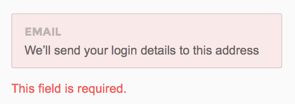

Pages Documentation
Beautifully Hand Crafted, Light Weight, Hardware Accelerated UI Framework
Introduction
Pages is carefully well thought UI frame work that is built on top of Bootstrap 3, Its hand crafted components look great on all devices and works super fast even on mobile
This documentation guide for all Pages users who can even be a beginner to Web development
Light Weight & Ready to Go
The entire set of modules clocks in at 38KB* minified and gzipped. Crafted with mobile devices in mind, it was important to us to keep our file sizes small, and every line of CSS was carefully considered. If you decide to only use a subset of these modules, you'll save even more bytes.
Production level usage using minfied and gzipped files
|
CSS
38Kb
|
JS
1.8Kb
|
Icons
12Kb
|
Other
120Kb
|
Getting Started
This part of the doc will help you to quick start your project and will you a basic idea about how pages work. For you to get start visit the "Get Started" folder in your download package
What's Included
Pages comes in two forms, within which you'll find the following directories and files, logically grouping common resources and providing both compiled and minified variations
Once you have download the package you will see the following folder structure
Whats Inside getting_started
This folder is a boilerplate template to help you start your project from. You will find both AngularJS and jQuery versions inside this.
In the getting_started folder you will find both jQuery and AngularJS implementations of Pages. Pages was originally written in jQuery. To make it work on AngularJS environments, several directives and controllers were written in v2.0.
Folder structure inside these two folders are almost the same except for the assets folder. In AngularJS this will contain directives and controllers which are mandatory for Pages to work, whereas in jQuery version you can have your own files.
Folder : assets
If you are using jQuery, this folder is entirely dedicated for you and you can add your own images, custom css and js files, its grouped into resource folders for best practice
If you are an AngularJS user you will find Pages core directive and controllers.
Folder : pages
This where the magic happens and contains pre-complied version of Pages, we do recommend updating any contents of the folder as all future updates are affected directly to this
AngularJS direcitves found in angular/assets/js/directives folder will be calling Pages modules found in this folder to make them work on AngularJS environments
Folder : tpl (Only available for AngularJS)
Contains template HTML files that are lazy loaded and rendered for each state
Whats Inside demo
This folder contains all the demo files that we have shown in the live version for reference, you may wish to import code to your project from that. This is only used for reference and we do no recommend to start your project from demo files. Contains files for both AngularJS and jQuery users
Whats Inside grunt and gulp
Pages support two popular build systems called Grunt and Gulp.
Other Useful resources that you may find:
Working with Less
Less is a CSS pre-processor, meaning that it extends the CSS language, adding features that allow variables, mixins, functions. Pages supports Less and is pure built on top of Less
Less Files are found under pages/src/less
Modules
The seperation of modules help you to remove whats not necessary and build your own custom pages css
| Name | Description |
|---|---|
| layout.less | The core layout styles for pages |
| respnsive.less | The responsive handlers |
| panels.less | Bootstrap Panels over-written classes |
| typography.less | Contains all typo related styles included bg-color |
| button.less | Bootstrap button over-written classes and pages dropdown |
| alerts.less | Bootstrap alert messages over-written classes |
| notifications.less | Pages notifications, bootstrap badges, popovers |
| progress_indicators.less | Pages progress bars, bootstrap native progress |
| modals.less | Bootstrap Modal Classes |
| tabs_accordian.less | Bootstrap tabs and accordains |
| sliders.less | Class for sliders |
| treeview.less | Class for treeview |
| treeview.less | Class for nestables |
| form_elements.less | All form related class including layouts & validations |
| tables.less | Classes for bootstrap tables and datatables |
| tables.less | Classes for bootstrap tables and datatables |
| vector_map.less | Classes for mapplic plugin |
| Charts.less | All chart related classes |
| print.less | Print media query for invoice |
| lockscreen.less | Class for lockscreen |
| calendar.less | Pages Calendar plugin |
| social.less | Pages Social |
| email.less | Pages email |
| misc.less | All other utilities and helper classes |
| z-index.less | To maintian heierachchy and order for layers |
Varriables
Varriables help to generate themes, you can custom build you very own theme. The varriables will be include inside a specific theme
e.g:
less/themes/default/var.less by changing the a few 5 main color varrables you can create your own color palette
Creating your own Color Pallete
By simply changing the following varriables the entire color palete mention here will change
Color Palette
Main Base color
@color-master
Primary Colors
@color-success
@color-complete
@color-primary
@color-warning
@color-danger
@color-info
Mixins
We have made a wide varraity of mixins that can be used in less,
mixins can be found under pages/src/less/mixin.less
Compiling
We recommend to compile locally without using less.js library, there are many Less compilers for Windows, Mac and also Linux users but we made it even easier. With pages powerful CLI you can compile it without any thirdparty software, simple do any changes to the less files in pages/less and it automatically updates the css in pages/css/pages.css
Use the following commmands on your terminal
Using Grunt
This command will automatically compile the less to css on file save
$ grunt watchThis command will compile the less to css on execute
$ grunt lessRead more about how to setup Grunt
Using Gulp
This command will automatically compile the less to css on file save
$ gulp watchThis command will compile the less to css on execute
$ gulp lessWorking with Sass
Sass is a CSS pre-processor, meaning that it extends the CSS language, adding features that allow variables, mixins, functions. Pages supports Sass and is pure built on top of Sass
Sass Files are found under pages/src/sass
Modules
The seperation of modules help you to remove whats not necessary and build your own custom pages css
| Name | Description |
|---|---|
| layout.scss | The core layout styles for pages |
| respnsive.scss | The responsive handlers |
| panels.scss | Bootstrap Panels over-written classes |
| typography.scss | Contains all typo related styles included bg-color |
| button.scss | Bootstrap button over-written classes and pages dropdown |
| alerts.scss | Bootstrap alert messages over-written classes |
| notifications.scss | Pages notifications, bootstrap badges, popovers |
| progress_indicators.scss | Pages progress bars, bootstrap native progress |
| modals.scss | Bootstrap Modal Classes |
| tabs_accordian.scss | Bootstrap tabs and accordains |
| sliders.scss | Class for sliders |
| treeview.scss | Class for treeview |
| treeview.scss | Class for nestables |
| form_elements.scss | All form related class including layouts & validations |
| tables.scss | Classes for bootstrap tables and datatables |
| tables.scss | Classes for bootstrap tables and datatables |
| vector_map.scss | Classes for mapplic plugin |
| Charts.scss | All chart related classes |
| print.scss | Print media query for invoice |
| lockscreen.scss | Class for lockscreen |
| calendar.scss | Pages Calendar plugin |
| social.scss | Pages Social |
| email.scss | Pages email |
| misc.scss | All other utilities and helper classes |
| z-index.scss | To maintian heierachchy and order for layers |
Varriables
Varriables help to generate themes, you can custom build you very own theme. The varriables will be include inside a specific theme
e.g:
scss/themes/default/var.scss by changing the a few 5 main color varrables you can create your own color palette
Creating your own Color Pallete
By simply changing the following varriables the entire color palete mention here will change
Color Palette
Main Base color
$color-master
Primary Colors
$color-success
$color-complete
$color-primary
$color-warning
$color-danger
$color-info
Mixins
We have made a wide varraity of mixins that can be used in scss,
mixins can be found under pages/src/scss/mixin.scss
Working with Grunt
In one word: automation. The less work you have to do when performing repetitive tasks like minification, compilation, unit testing, linting, etc, the easier your job becomes. After you've configured it through a Gruntfile. Pages supports Grunt to make it even easier for developers, this allows us to implement a powerful command line interface for pages. Here are some of the things that we have added using grunt
Installing Grunt
To install grunt first you must have NodeJs installed, NodeJS will have npm (node packaged modules)
Run the following commands
- Install
grunt-cliglobally by running the following commandnpm install -g grunt-cli - In you downloaded package from themeforest, navigate to
grunt/directory and copy bothpackage.jsongruntfile.jsto your project root. e.g :getting_startedfolder - Navigate to the root directory of your project, then run
npm install.
Once you have succesfully setup now you can use pages Grunt CLI commands to automate your task
Commands
Grunt Build
This will automatically minify your assets resources like css and js into a folder called dist
Grunt Watch
This will automaically compile the pages Less files on save
Grunt Less
This will compile the pages Less files on excute once
Your are free to customize the Grunt task to your need by editing the gruntfile.js in the root directory of getting_started
Troubleshooting
Should you encounter problems with installing dependencies or running Grunt commands, first delete the /node_modules/ directory generated by npm. Then, rerun npm install.
Working with Gulp
Gulp is another famous build system supported by pages, gulp's use of streams and code-over-configuration makes for a simpler and more intuitive build.
Installing Gulp
To install gulp first you must have NodeJs installed, NodeJS will have npm (node packaged modules)
Run the following commands
- Install
gulpglobally by running the following commandnpm install -g gulp - In you downloaded package from themeforest, navigate to
gulp/directory and copy bothpackage.jsongulpfile.jsto your project root. e.g :getting_startedfolder - Navigate to the root directory of your project or getting_started folder, then run
npm install.
Once you have succesfully setup now you can use pages Gulp CLI commands to automate your task
Commands
gulp build
This will automatically minify your assets resources like css and js into a folder called dist
gulp watch
This will automaically compile the pages Less files on save
gulp less
This will compile the pages Less files on excute once
Your are free to customize the Gulp task to your need by editing the gulpfile.js
Troubleshooting
Should you encounter problems with installing dependencies or running Gulps commands, first delete the /node_modules/ directory generated by npm. Then, rerun npm install.
Browser Support
Pages is built keeping mind to support a wide range of browsers and devices. We all major browers Google Chrome, Mozilla Firefox, Safari, Opera, Internet Explorer 9 and Above
Pages not only is supported by major browser but also is hardware accelarated using the GPU
| Chrome | Firefox | Internet Explorer | Opera | Safari | |
|---|---|---|---|---|---|
| Android | Supported | Supported | N/A | Not Supported | N/A |
| iOS | Supported | N/A | Not Supported | Supported | |
| Mac OS X | Supported | Supported | Supported | Supported | |
| Windows | Supported | Supported | Supported | Supported | Not Supported |
AngularJS support
Folder structure
Use Pages AngularJS boilerplate code to kickstart your project in no time. In your downloaded bundle locate to getting_started/angular. You will find a folder structure similar to the following.
index.html
It is recommended that you keep the default JS/CSS file loading order intact. If you want to load page specific JS/CSS files you can use
ocLazyLoad module to do so (read below). You must NOT remove/change the location of
<link id="lazyload_placeholder">Lazy loading
Use assets/js/config.js to define your routes. For each route you can set which libraries, controllers or directives that need to be loaded on demand, using ocLazyLoad
.state('app.dashboard', {
url: "/home",
templateUrl: "tpl/home.html",
controller: 'HomeCtrl',
resolve: {
deps: ['$ocLazyLoad', function($ocLazyLoad) {
return $ocLazyLoad.load([
/*
Load any ocLazyLoad module here
ex: 'wysihtml5'
Open config.lazyload.js for available modules
*/
], {
insertBefore: '#lazyload_placeholder'
})
.then(function() {
return $ocLazyLoad.load([
'assets/js/controllers/home.js'
]);
});
}]
}
})MeteorJS
Pages Admin now officially supports runs on MeteorJS, we have took the time integrate all Pages demo components and widgets to a MeteorJS.
Dependencies Required to be installed from Atmosphere
- less
- jquery
- twbs:bootstrap
- cwaring:modernizr
- revox:pages-core
- gromo:jquery.scrollbar
- fortawesome:fontawesome
- meteorhacks:flow-router
- meteorhacks:flow-layout
- zimme:active-route
- momentjs:moment
Quick Start
Step one
Download sample .meteor project that we have created for you Download Package
Step two
Unzip the file and you will find something called ".meteor"
Step three
Copy that folder over to pages-admin/getting_started/meteor
Final step
Thats it! now navigate to your folder pages-admin/getting_started/meteor and run
meteor
The folder structure that we have prepared for you is also recommended by meteorJS team
Best Practices
- Only images and fonts go into the public folder in
public/assets/*and are available in the browser everywhere as e. g.('/assets/img/logo.jpg') - All styling that applies to the whole side goes to
client/stylesheets/* - 3rd party libraries that require a global scope go into
client/compatibility. Load order is still a problem (rename files), so it is best to add 3rd party libraries as atmosphere packages - All the html and page / component specific css/lss goes into the
views/folder - A leading underscore
_means that the component is not stand-alone and part of something - The
_sharedfolder holds components that are shared with multiple views (e.g. the sidebar is used on all pages)
Express JS
Express is a minimal and flexible Node.js web application framework that provides a robust set of features for web and mobile applications.
Pages ExpressJS Generator
Pages comes with a command line tool to generate ExpressJS boilerplate using one simple command:
Requirements
- NodeJS
- Grunt
How to generate
Step one
Using your terminal navigate to the diretory boilerplates in your downloaded package
Step two
Run the following command on your terminal, this will download the dependencies for the generator to work and only required once
npm install
Step Three
Type the following command to generate your expressjs boilerplate for pages framework installed
grunt build:express
To give your app name type it as the last argument
grunt build:express:my app name here
Sails JS
Sails is the most popular MVC framework for Node.js. It is designed for building practical, production-ready Node.js apps in a matter of weeks - not months.
Pages SailsJS Generator
Pages comes with a command line tool to generate SailsJS boilerplate using one simple command:
Requirements
- NodeJS
- Grunt
How to generate
Step one
Using your terminal navigate to the diretory boilerplates in your downloaded package
Step two
Run the following command on your terminal, this will download the dependencies for the generator to work and only required once
npm install
Step Three
Type the following command to generate your expressjs boilerplate for pages framework installed
grunt build:sails
To give your app name type it as the last argument
grunt build:sails:my app name here
Rails
Ruby on Rails® is an open-source web framework that’s optimized for programmer happiness and sustainable productivity
Pages Ruby on Rails Generator
Pages comes with a command line tool to generate Rails boilerplate using one simple command:
Requirements
- NodeJS
- Grunt
How to generate
Step one
Using your terminal navigate to the diretory boilerplates in your downloaded package
Step two
Run the following command on your terminal, this will download the dependencies for the generator to work and only required once
npm install
Step Three
Type the following command to generate your expressjs boilerplate for pages framework installed
grunt build:rails
To give your app name type it as the last argument
grunt build:rails:my app name here
API Reference
As mentioned in the Getting Started guide, Pages core framework files can be found in the pages folder. Inside this you'll be able to find pages.js and pages.min.js files which contain the core logic and utility functions of the framework. Simply including either of these files will set environment variables, auto initialize all the core modules for you and present you with the Pages global object
$.Pages which you can use to call utility functions.
<!-- Initialize Pages core objects -->
<script type="text/javascript" src="pages/js/pages.min.js">
Environment variables
Pages will detect the user OS and add it as a class name (ex: 'windows', 'mac', 'unix', 'linux') into body.
It will also detect if it's mobile device or desktop and add either 'mobile' and 'desktop' into the same tag.
Auto-initialized jQuery Plugins
The following table shows which plugins are auto-initialized and their default configuration.
AngularJS users can apply corresponding directives or ui-jq attribute (provided by UI.Utils) to load plugins.
| Plugin | jQuery | AngularJS |
|---|---|---|
| Bootstrap Tooltip | Set [data-toggle="tooltip"] to any button or anchor tag.
|
|
| Select2 | Set [data-init-plugin="select2"]
|
N/A. Please refer to Form elements |
| Scrollbar | Set class="scrollbar"
|
|
| Switchery | Set [data-init-plugin="switchery"]
|
|
| SelectFx | Set [data-init-plugin="cs-select"]
|
|
| Unveil | Applied to any img
|
|
Utility functions
$.Pages.isVisibleXs()
Returns true if the current viewport is an extra small device. ex: Phones (<768px)
$.Pages.isVisibleSm()
Returns true if the current viewport is a small device. ex: Tablets (≥768px)
$.Pages.isVisibleMd()
Returns true if the current viewport is a medium device. ex: Desktops (≥992px)
$.Pages.isVisibleLg()
Returns true if the current viewport is a large device. ex: Desktops (≥1200px)
$.Pages.getUserAgent()
Reads the pre-set user-agent class from body and returns either 'mobile' or 'desktop'
$.Pages.setFullScreen(element)
Makes the given element to go full-screen mode. ex: $.Pages.setFullScreen(document.querySelector('html'));
$.Pages.getColor(color,opacity)
Returns the rgba value for a given Pages contextual color and opacity.
Widgets Market
Starting from Pages v2.0.0, we will be publishing a new widget every week through our Widget Marketplace. Yes, that's a promise we give to our loyal customers! We believe, doing this will make your life even easier as it introduces various pre-built widgets that you can easily copy-paste into your existing dashboard and visualize data in a snap. We are hoping to release widgets for various categories such as social, commerce and finance.
How to use Pages Widgets
You may be noticing a new link appearing in the sidebar of demo dashboard (demo/html/index.html) already, titled 'Widgets'. This link will take you to the Widget marketplace where you can search and preview the widgets published by us. Once you decide which widget to add to your dashboard please follow the steps below:
Step one
Open the extracted bundle folder then go to widgets sub-folder. Then open index.html of your preferred widget and copy the markup of the widget into your dashboard. This example will show how to add widget_plain_live_widget into the demo dashboard at demo/html/index.html
<div class="ar-1-1 widget-1-wrapper">
<div class="widget-3 panel no-border bg-complete no-margin widget-loader-bar">
<div class="panel-body no-padding">
<div class="metro live-tile" data-mode="carousel" data-start-now="true" data-delay="3000">
<div class="slide-front tiles slide active">
<div class="padding-30">
<div class="pull-top">
<div class="pull-left visible-lg visible-xlg">
<i class="pg-map"></i>
</div>
<div class="pull-right">
<ul class="list-inline ">
<li>
<a href="#" class="no-decoration"><i class="pg-comment"></i>
</a>
</li>
<li>
<a href="#" class="widget-3-fav no-decoration"><i class="pg-like"></i>
</a>
</li>
</ul>
</div>
<div class="clearfix"></div>
</div>
<div class="pull-bottom p-b-30">
<p class="p-t-10 fs-12 p-b-5 hint-text">21 Jan</p>
<h3 class="no-margin text-white p-b-10">Carefully
<br>designed for a
<br>great
<span class="semi-bold">experience</span>
</h3>
</div>
</div>
</div>
<div class="slide-back tiles">
<div class="padding-30">
<div class="pull-top">
<div class="pull-left visible-lg visible-xlg">
<i class="pg-map"></i>
</div>
<div class="pull-right">
<ul class="list-inline ">
<li>
<a href="#" class="no-decoration"><i class="pg-comment"></i>
</a>
</li>
<li>
<a href="#" class="widget-3-fav no-decoration"><i class="pg-like"></i>
</a>
</li>
</ul>
</div>
<div class="clearfix"></div>
</div>
<div class="pull-bottom p-b-30">
<p class="p-t-10 fs-12 p-b-5 hint-text">21 Jan</p>
<h3 class="no-margin text-white p-b-10">A whole new
<br>
<span class="semi-bold">page</span>
</h3>
</div>
</div>
</div>
</div>
</div>
</div>
</div>Step two
Check if the widget has any dependencies that dashboard hasn't included already. If you spot any, include them in your dashboard.
Widget in example above depends on MetroJS. Make sure you correct the path in the dependencies relative to the dashboard file
<script src="../plugins/jquery-metrojs/MetroJs.min.js" type="text/javascript"></script>Step three
Open js/widget.js and copy the JS into your custom JS file used in the dashboard
/*
Widget specific JS (ie: init scripts of
plugins used in the widget) go here
*/
$(".widget-3 .metro").liveTile();
Step four
Open css/widget.css and copy the CSS into your custom CSS file used in the dashboard
/*
Widget specific styles go here
*/
Calendar
Pages calendar plugin is exclusive only on pages and is not a third party plugin. The horizontal scrolling helps it to fit easily on to small screens and user experience is seemless across all platforms. It supports many features including multiple languages and timezones
jQuery users
Dependencies
<script src="assets/plugins/interactjs/interact.min.js" type="text/javascript"></script>
<script src="assets/plugins/moment/moment-with-locales.min.js"></script>Pages Calendar Lib
<script src="pages/js/pages.calendar.min.js"></script>HTML Source
Inlcude the following HTML source to your file, you can remove the compontents you do not need to have
<div id="myCalendar" class="full-height"></div>Initialize Pages Calendar
To initialize pages calendar with default setting use the following code
$('#myCalendar').pagescalendar();AngularJS users
Dependencies
You will find calendar route and dependency injections in demo/angular/assets/js/config.js. Controllers and Directives are found in assets/js/apps/calendar/calendar.js and these depend pages.calendar.min.js mentioned above
...
//Calendar app
.state('app.calendar', {
url: '/calendar',
templateUrl: 'tpl/apps/calendar/calendar.html',
resolve: {
deps: ['$ocLazyLoad', function($ocLazyLoad) {
return $ocLazyLoad.load([
'switchery',
'jquery-ui',
'moment',
'hammer'
], {
insertBefore: '#lazyload_placeholder'
})
.then(function() {
return $ocLazyLoad.load([
'pages/js/pages.calendar.min.js',
'assets/js/apps/calendar/calendar.js'
])
});
}]
}
})
...Template
<!-- tpl/apps/calendar/calendar.html -->
<!-- START CALENDAR -->
<div ng-controller="CalendarCtrl" pg-calendar class="full-height"></div>
<!-- END CALENDAR -->Controller and Directive
// assets/js/apps/calendar/calendar.js
'use strict';
/* Controllers */
angular.module('app')
.controller('CalendarCtrl', ['$scope', '$stateParams', '$rootScope', function($scope, $stateParams, $rootScope) {
// Apply recommended theme for Calendar
$scope.app.layout.theme = 'pages/css/themes/calendar.css';
// For demo purposes only. Changes the theme back to pages default when switching the state.
$rootScope.$on('$stateChangeSuccess',
function(event, toState, toParams, fromState, fromParams) {
$scope.app.layout.theme = 'pages/css/pages.css';
})
}]);
/* Directives */
angular.module('app')
.directive('pgCalendar', function() {
return {
restrict: 'A',
link: function(scope, element, attrs) {
var selectedEvent;
$(element).pagescalendar()
}
}
})Calendar Settings and Callbacks
$('body').pagescalendar({
ui: {
year: {
visible: true,
format: 'YYYY',
startYear: '2000',
endYear: moment().add(10, 'year').format('YYYY'),
eventBubble: true
},
month: {
visible: true,
format: 'MMM',
eventBubble: true
},
date: {
format: 'MMMM YYYY, D dddd'
},
week: {
day: {
format: 'D'
},
header: {
format: 'dd'
},
eventBubble: true,
startOfTheWeek: '0',
endOfTheWeek:'6'
},
grid: {
dateFormat: 'D dddd',
timeFormat: 'h A',
eventBubble: true,
slotDuration: '30'
}
},
header: {
visible: true,
dateFormat: 'MMM YYYY'
},
miniCalendar: {
visible: true,
highlightWeek: true,
showEventBubbles: true
},
eventObj: {
editable: true
},
view:'week',
now: null,
locale: 'en',
timeFormat: 'h:mm a',
minTime:0,
maxTime:24,
dateFormat: 'MMMM Do YYYY',
slotDuration: '30', //In Mins : only supports 30 and 60
events: [],
eventOverlap: true,
weekends:true,
disableDates:[],
//Event CallBacks
onViewRenderComplete: function() {},
onEventDblClick: function() {},
onEventClick: function(event) {},
onEventRender: function() {},
onEventDragComplete: function(event) {},
onEventResizeComplete: function(event) {},
onTimeSlotDblClick: function(timeSlot) {},
onDateChange:function(range){}
})
Sample JSON Event Object
[
{
"title": "Call Dave",
"class": "bg-success-lighter",
"start": "2014-10-07T06:00:00",
"end": "2014-10-07T08:00:24",
"other": {}
},
{
"title": "Meeting Roundup",
"class": "bg-success-lighter",
"start": "2014-11-07T06:00:00"
},
{
"title": "Double click Any where",
"class": "bg-complete-lighter",
"start": "2014-11-07T01:00:00",
"end": "2014-11-07T02:00:00",
"other": {
"note": "test"
}
}
]
Public Methods
$('#my_calendar_elment').pagescalendar('rebuild');
Rebuild your calendar
$('#my_calendar_elment').pagescalendar('today');
Set date to current date
$('#my_calendar_elment').pagescalendar('next');
Next Month
$('#my_calendar_elment').pagescalendar('prev');
Previous Month
$('#my_calendar_elment').pagescalendar('setDate',value);
Parse in the date string to set a date to the calendar, it will accept any standard date formate
$('body').pagescalendar('getDate',formate);
You can get the current date of the calendar and also pass in the required date formate to get the the desire formate output
example : $('#my_calendar_elment').pagescalendar('getDate','dd/mm/yyyy');
It will accept any date formate string
$('#my_calendar_elment').pagescalendar('render');
To render the calendar
$('#my_calendar_elment').pagescalendar('setLocale','fr');
Change langues
$('#my_calendar_elment').pagescalendar('reloadEvent');
Reload and draw events for the particular view.
$('#my_calendar_elment').pagescalendar('addEvent',eventObject);
Adding an event to the calendar using the even object varriable, demostrated in demos/assets/js/calendar.js
$('#my_calendar_elment').pagescalendar('addEvent',eventArray);
Add a batch of events at once.
$('#my_calendar_elment').pagescalendar('removeEvent',index);
Removing an event also demonstrated in : demos/assets/js/calendar.js
$('#my_calendar_elment').pagescalendar('removeAllEvents');
This method will remove all events in your array
$('#my_calendar_elment').pagescalendar('updateEvent',eventObject);
Editing an event to the calendar using the even object varriable, demostrated in demos/assets/js/calendar.js
$('#my_calendar_elment').pagescalendar('getEvents',option);
Will get you all the events in your calendar array
$('#my_calendar_elment').pagescalendar('view',option);
You can set the view / You can change your view to : "month" & " week"
$('#my_calendar_elment').pagescalendar('getView');
Display the view type that is currently loaded : "month" or " week"
$('#my_calendar_elment').pagescalendar('getDateRangeInView');
Will display start and end date of the current view
$('#my_calendar_elment').pagescalendar('getDateRangeInView');
Will display start and end date of the current view
$('#my_calendar_elment').pagescalendar('setState',state);
You can set state mannually when you need to, there are two states "loading" and "loaded", This will help you to show a progressbar for lazy event fetching
$('#my_calendar_elment').pagescalendar('error',msg);
You can display an error message on your calendar by passing in a string
Callbacks
You can see a list of call back demostrated in demo/assets/calendar.js file
onViewRenderComplete
On Render Complete
onEventDblClick
Event Double Click
onEventClick(event)
Event click call back returns the clicked event details into an array, you can
console.log(event) to see all event attributes
onEventRender
After Events are rendered to the view
onEventDragComplete
After user drag event is completed
onEventResizeComplete
After user resize event is completed
onTimeSlotDblClick(timeSlot)
Double click time slot on the grid, returns the date and time of the particular timeslot
onDateChange(range)
When ever the calendar's date is change, this call back will return a range, i.e: range.start and range.end both are dates
Supported Languages
Use the language code and set it to locale
| Language | Code |
|---|---|
| Afrikaans | af |
| Albanian | sq |
| Armenian | hy-am |
| Azerbaijani | az |
| Bahasa Indonesia | id |
| Bahasa Malayu | ms-my |
| Basque | eu |
| Belarusian | be |
| Bengali | bn |
| Bosnian | bs |
| Breton | br |
| Bulgarian | bg |
| Catalan | ca |
| Chinese | zh-cn |
| Chinese (Traditional) | zh-tw |
| Chuvash | cv |
| Croatian | hr |
| Czech | cs |
| Danish | da |
| Dutch | nl |
| English | en |
| English (Australia) | en-au |
| English (Canada) | en-ca |
| English (England) | en-gb |
| Esperanto | eo |
| Estonian | et |
| Farose | fo |
| Finnish | fi |
| French | fr |
| French (Canada) | fr-ca |
| Galician | gl |
| Georgian | ka |
| German | de |
| German (Austria) | de-at |
| Greek | el |
| Hebrew | he |
| Hungarian | hu |
| Icelandic | is |
| Italian | it |
| Japanese | ja |
| Khmer (Cambodia) | km |
| Korean | ko |
| Latvian | lv |
| Lithuanian | lt |
| Luxembourgish | lb |
| Macedonian | mk |
| Malayalam | ml |
| Norwegian | nb |
| Norwegian Nynorsk | nn |
| Polish | pl |
| Portuguese | pt |
| Portuguese (Brazil) | pt-br |
| Romanian | ro |
| Russian | ru |
| Serbian | sr |
| Serbian Cyrillic | sr-cyrl |
| Slovak | sk |
| Slovenian | sl |
| Spanish | es |
| Swedish | sv |
| Tagalog (Filipino) | tl-ph |
| Tamaziɣt | tzm |
| Tamaziɣt Latin | tzm-latn |
| Tamil | ta |
| Thai | th |
| Turkish | tr |
| Ukrainian | uk |
| Uzbek | uz |
| Vietnamese | vi |
| Welsh | cy |
For help and bug report please contact [email protected]
jQuery users
Include the dependencies
Pages Social depends on the following jQuery plugins. Make sure you include them before calling the library functions.<!-- Waits for the images to be loaded before applying the Isotope plugin -->
<script src="assets/plugins/imagesloaded/imagesloaded.pkgd.min.js"></script>
<!-- Isotope plugin arranges the card layout -->
<script src="assets/plugins/jquery-isotope/isotope.pkgd.min.js" type="text/javascript"></script>
<!-- Required for stepsForm plugin -->
<script src="assets/plugins/classie/classie.js" type="text/javascript"></script>
<!-- Creates the multi-step status update form -->
<script src="assets/plugins/codrops-stepsform/js/stepsForm.js" type="text/javascript"></script>Include Pages Social Lib
Include pages.social.min.js below pages.js
<script src="pages/js/pages.social.min.js"></script>Include Stylesheet
We recommend that you use the 'simple' theme instead of pages default theme (pages.css) together with Social for better experience.
<link href="pages/css/themes/simple.css" rel="stylesheet" type="text/css" />HTML Source
The following shows the basic markup structure you have to follow when setting up the Social page. Components mentioned inside *** are further explained below. You may change the content inside each component without changing the main structure below.
<!-- START SOCIAL WRAPPER -->
<div class="social-wrapper">
<!-- START SOCIAL -->
<div class="social " data-pages="social">
<!--
*** SOCIAL COVER GOES HERE ***
-->
<div class="container-fluid container-fixed-lg sm-p-l-20 sm-p-r-20">
<div class="feed">
<!-- START DAY -->
<div class="day" data-social="day">
<!--
*** POSTS GO HERE ***
-->
</div>
<!-- END DAY -->
</div>
<!-- END FEED -->
</div>
<!-- END CONTAINER FLUID -->
</div>
<!-- END SOCIAL -->
</div>
<!-- END SOCIAL WRAPPER -->Markup for cover
<!-- START SOCIAL COVER -->
<div class="jumbotron" data-pages="parallax" data-social="cover">
<!-- START COVER PHOTO -->
<div class="cover-photo">
<img alt="Cover photo" src="assets/img/social/cover.png" />
</div>
<!-- END COVER PHOTO -->
<!-- START COVER PHOTO INNER -->
<div class="container-fluid container-fixed-lg sm-p-l-20 sm-p-r-20">
<div class="inner">
<div class="pull-bottom bottom-left m-b-40">
<h5 class="text-white no-margin">welcome to pages social</h5>
<h1 class="text-white no-margin"><span class="semi-bold">social</span> cover</h1>
</div>
</div>
</div>
<!-- END COVER PHOTO INNER -->
</div>
<!-- END SOCIAL COVER -->Markup for posts
<!-- START PROFILE OVERVIEW -->
<div class="card no-border bg-transparent full-width" data-social="item">
<!--
SHOW ANY PROFILE OWNER DATA IN THE FIRST FULL-WIDTH ISOTOPE ITEM
EX: NAME, CURRENT STATUS, LOCATION, ABOUT SECTION AND FRIENDS
-->
<!-- START CONTAINER FLUID -->
<div class="container-fluid p-t-30 p-b-30 ">
<div class="row">
<div class="col-md-4">
<div class="container-xs-height">
<div class="row-xs-height">
<!-- START USER PROFILE PICTURE -->
<div class="social-user-profile col-xs-height text-center col-top">
<div class="thumbnail-wrapper d48 circular bordered b-white">
<img alt="Avatar" width="55" height="55" data-src-retina="assets/img/profiles/avatar_small2x.jpg" data-src="assets/img/profiles/avatar.jpg" src="assets/img/profiles/avatar.jpg">
</div>
<br>
<i class="fa fa-check-circle text-success fs-16 m-t-10"></i>
</div>
<!-- END USER PROFILE PICTURE -->
<!-- START USER NAME -->
<div class="col-xs-height p-l-20">
<h3 class="no-margin">David Nester</h3>
<p class="no-margin fs-16">is excited about the new pages design framework</p>
<p class="hint-text m-t-5 small">San Fransisco Bay | CEO at Pages.inc</p>
</div>
<!-- END USER NAME -->
</div>
</div>
</div>
<!-- START USER BIO -->
<div class="col-md-4">
<p class="no-margin fs-16">Hi My Name is David Nester, & heres my new pages user profile page</p>
<p class="hint-text m-t-5 small">I love reading people's about page especially those who are in the same industry as me.</p>
</div>
<!-- END USER BIO -->
<!-- START USER'S FRIENDS -->
<div class="col-md-4">
<p class="m-b-5 small">1,435 Mutual Friends</p>
<ul class="list-unstyled ">
<li class="m-r-10">
<div class="thumbnail-wrapper d32 circular b-white m-r-5 b-a b-white">
<img width="35" height="35" data-src-retina="assets/img/profiles/1x.jpg" data-src="assets/img/profiles/1.jpg" alt="Profile Image" src="assets/img/profiles/1.jpg">
</div>
</li>
<li>
<div class="thumbnail-wrapper d32 circular b-white m-r-5 b-a b-white">
<img width="35" height="35" data-src-retina="assets/img/profiles/2x.jpg" data-src="assets/img/profiles/2.jpg" alt="Profile Image" src="assets/img/profiles/2.jpg">
</div>
</li>
...
<li>
<div class="thumbnail-wrapper d32 circular b-white">
<div class="bg-master text-center text-white"><span>+34</span>
</div>
</div>
</li>
</ul>
<br>
<p class="m-t-5 small">More friends</p>
</div>
<!-- END USER'S FRIENDS -->
</div>
</div>
<!-- END CONTAINER FLUID -->
</div>
<!-- END PROFILE OVERVIEW -->
<!-- START STATUS UPDATE FORM -->
<!--
USE 'col1, col2, col3' TO SPECIFY CARD WIDTH
data-social="item" AUTO INIT THE CARD
-->
<div class="card col2 padding-20" data-social="item">
<!--
MULTI-STEP STATUS UPDATE FORM IS MADE POSSIBLE USING 'stepsForm' PLUGIN
-->
<form class="simform no-margin" autocomplete="off" data-social="status">
<div class="status-form-inner">
<!-- START QUESTIONS -->
<ol class="questions">
<li>
<span>
<label for="status-q1">What's on your mind?</label>
</span>
<input id="status-q1" name="q1" type="text" />
</li>
<li>
<span>
<label for="status-q2">What are you feeling?</label>
</span>
<input id="status-q2" name="q2" type="text" />
</li>
<li>
<span>
<label for="status-q3">What's your location?</label>
</span>
<input id="status-q3" name="q3" type="text" />
</li>
<li>
<span>
<label for="status-q4">Who are you with?</label>
</span>
<input id="status-q4" name="q4" type="text" />
</li>
</ol>
<!--END QUESTIONS -->
<button class="submit" type="submit">Send answers</button>
<!-- FORM CONTROLS. DO NOT REMOVE -->
<div class="controls">
<button class="next"></button>
<div class="progress"></div>
<span class="number">
<span class="number-current"></span>
<span class="number-total"></span>
</span>
<span class="error-message"></span>
</div>
</div>
<!-- MESSAGE TO BE DISPLAYED AT THE END -->
<span class="final-message"></span>
</form>
</div>
<!-- END STATUS UPDATE FORM -->
<!-- START POST TYPE-1 -->
<div class="card status col2" data-social="item">
<div class="circle" data-toggle="tooltip" title="Label">
</div>
<h5>David Nester updated his status
<span class="hint-text">few seconds ago</span></h5>
<h2>Earned my first salary bonus for the best design of the year award.</h2>
<ul class="reactions">
<li><a href="#">5,345 <i class="fa fa-comment-o"></i></a>
</li>
<li><a href="#">23K <i class="fa fa-heart-o"></i></a>
</li>
</ul>
</div>
<!-- END POST TYPE-1 -->
<!-- START POST TYPE-2 -->
<div class="card share share-self col1" data-social="item">
<div class="circle" data-toggle="tooltip" title="Label">
</div>
<div class="card-header clearfix">
<div class="user-pic">
<img alt="Profile Image" width="33" height="33" data-src-retina="assets/img/profiles/5x.jpg" data-src="assets/img/profiles/5.jpg" src="assets/img/profiles/5x.jpg">
</div>
<h5>Shannon Williams</h5>
<h6>Shared a photo
<span class="location semi-bold"><i class="fa fa-map-marker"></i> NYC, New York</span>
</h6>
</div>
<div class="card-description">
<p>Inspired by : good design is obvious, great design is transparent</p>
<div class="via">via themeforest</div>
</div>
<div class="card-content">
<ul class="buttons ">
<li>
<a href="#"><i class="fa fa-expand"></i>
</a>
</li>
<li>
<a href="#"><i class="fa fa-heart-o"></i>
</a>
</li>
</ul>
<img alt="Social post" src="assets/img/social-post-image.png">
</div>
<div class="card-footer clearfix">
<div class="time">few seconds ago</div>
<ul class="reactions">
<li><a href="#">5,345 <i class="fa fa-comment-o"></i></a>
</li>
<li><a href="#">23K <i class="fa fa-heart-o"></i></a>
</li>
</ul>
</div>
</div>
<!-- END POST TYPE-2 -->
<!-- START POST TYPE-3 -->
<div class="card share share-self col1" data-social="item">
<div class="circle" data-toggle="tooltip" title="Label">
</div>
<div class="card-header clearfix">
<div class="user-pic">
<img alt="Profile Image" width="33" height="33" data-src-retina="assets/img/profiles/8x.jpg" data-src="assets/img/profiles/8.jpg" src="assets/img/profiles/8x.jpg">
</div>
<h5>Jeff Curtis</h5>
<h6>Shared a Tweet
<span class="location semi-bold"><i class="fa fa-map-marker"></i> SF, California</span>
</h6>
</div>
<div class="card-description">
<p>What you think, you become. What you feel, you attract. What you imagine, you create - Buddha. <a href="#">#quote</a> </p>
<div class="via">via Twitter</div>
</div>
</div>
<!-- END POST TYPE-3 -->
<!-- START POST TYPE-4 -->
<div class="card share share-other col1" data-social="item">
<div class="circle" data-toggle="tooltip" title="Label">
</div>
<div class="card-content">
<ul class="buttons ">
<li>
<a href="#"><i class="fa fa-expand"></i>
</a>
</li>
<li>
<a href="#"><i class="fa fa-heart-o"></i>
</a>
</li>
</ul>
<img alt="Quote" src="assets/img/social/quote.jpg">
</div>
<div class="card-description">
<p>Like if you agree</p>
</div>
<div class="card-footer clearfix">
<div class="time">few seconds ago</div>
<ul class="reactions">
<li><a href="#">5,345 <i class="fa fa-comment-o"></i></a>
</li>
<li><a href="#">23K <i class="fa fa-heart-o"></i></a>
</li>
</ul>
</div>
<div class="card-header clearfix">
<div class="user-pic">
<img alt="Profile Image" width="33" height="33" data-src-retina="assets/img/profiles/7x.jpg" data-src="assets/img/profiles/7.jpg" src="assets/img/profiles/7x.jpg">
</div>
<h5>Tracy Brooks</h5>
<h6>Shared a photo on your wall</h6>
</div>
</div>
<!-- END POST TYPE-4 -->
<!-- START POST TYPE-5 -->
<div class="card share share-self col1" data-social="item">
<div class="card-header ">
<h5 class="text-complete pull-left fs-12">News <i class="fa fa-circle text-complete fs-11"></i></h5>
<div class="pull-right small hint-text">
5,345 <i class="fa fa-comment-o"></i>
</div>
<div class="clearfix"></div>
</div>
<div class="card-description">
<h3>Ebola outbreak: Clinical drug trials to start next month as death toll mounts</h3>
</div>
<div class="card-footer clearfix">
<div class="pull-left">via <span class="text-complete">CNN</span>
</div>
<div class="pull-right hint-text">
Apr 23
</div>
<div class="clearfix"></div>
</div>
</div>
<!-- END POST TYPE-5 -->Initializing Pages Social
Pages will auto-initialize Social if elements with following data-properties are found in the DOM. The following shows the default settings object for Social
$.fn.social.defaults = {
cover: '[data-social="cover"]',
day: '[data-social="day"]',
status: '[data-social="status"]',
item: '[data-social="item"]',
colWidth: 300
}If you wish to make the initialization programatically, refrain from using the above data properties in the DOM. Set the classes/ids you defined in the DOM in $.fn.social.defaults object and then call the initialization script.
The minimum column width for Social is 300 pixels. If you wish to change it, you may have edit the .col1,.col2 and .col3 in the CSS accordingly. ex: If colWidth is 400, .col1,.col2 and .col3 will get 400px, 820px and 1220px (Note the extra 20px reserved for gutter width)
$(document).ready(function() {
$.fn.social.defaults = {
cover: '.cover', // Cover element
day: '.day', // Day element
status: '.status', // Status update box element
item: '.item', // Post item
colWidth: 300 // minimum column width for cards
}
$('#social').social();
});AngularJS users
Dependencies
You will find social app route and dependency injections in demo/angular/assets/js/config.js. Controllers and Directives are found in assets/js/apps/social/social.js and these depend social lib, pages.social.min.js mentioned above
// File: demo/angular/assets/js/config.js
...
// Social app
.state('app.social', {
url: '/social',
templateUrl: 'tpl/apps/social/social.html',
resolve: {
deps: ['$ocLazyLoad', function($ocLazyLoad) {
return $ocLazyLoad.load([
'isotope',
'stepsForm'
], {
insertBefore: '#lazyload_placeholder'
})
.then(function() {
return $ocLazyLoad.load([
'pages/js/pages.social.min.js',
'assets/js/apps/social/social.js'
])
});
}]
}
})
...Template
Please refer to jQuery section above for Markup for posts and cover.
<!-- File: tpl/apps/social/social.html -->
<div class="social-wrapper" ng-controller="SocialCtrl">
<div class="social " data-pages="social" pg-social>
<!--
*** SOCIAL COVER GOES HERE ***
-->
<div class="container-fluid container-fixed-lg sm-p-l-20 sm-p-r-20">
<div class="feed">
<!-- START DAY -->
<div class="day" data-social="day">
<!--
*** POSTS GO HERE ***
-->
</div>
<!-- END DAY -->
</div>
<!-- END FEED -->
</div>
<!-- END CONTAINER FLUID -->
</div>
<!-- /container -->
</div>Controller and Directive
// File: assets/js/apps/social/social.js
'use strict';
/* Controllers */
angular.module('app')
// Social controller
.controller('SocialCtrl', ['$scope', '$stateParams', '$rootScope', function($scope, $stateParams, $rootScope) {
// Apply recommended theme for Calendar
$scope.app.layout.theme = 'pages/css/themes/simple.css';
// For demo purposes only. Changes the theme back to pages default when switching the state.
$rootScope.$on('$stateChangeSuccess',
function(event, toState, toParams, fromState, fromParams) {
$scope.app.layout.theme = 'pages/css/pages.css';
})
}]);
/* Directives */
angular.module('app')
.directive('pgSocial', function() {
return {
restrict: 'A',
link: function(scope, element, attrs) {
var $social = $(element);
$social.social($social.data());
}
}
});For help and bug report please contact [email protected]
Pages Email app is a web-based email client designed and developed exclusively for Pages framework. It has a responsive design to work flawlessly across many devices. Please note that current version only includes the Inbox and Compose views. This is a work in progress and we're hoping to make this a complete jQuery plugin soon
jQuery users
Dependencies
Include the stylesheets of the libraries
<link href="assets/plugins/bootstrap3-wysihtml5/bootstrap3-wysihtml5.min.css" rel="stylesheet" type="text/css" />
<link href="assets/plugins/jquery-menuclipper/jquery.menuclipper.css" rel="stylesheet" type="text/css" />
<link href="assets/plugins/bootstrap-tag/bootstrap-tagsinput.css" rel="stylesheet" type="text/css" />Include the scripts
<script src="assets/plugins/bootstrap3-wysihtml5/bootstrap3-wysihtml5.all.min.js"></script>
<script src="assets/plugins/jquery-menuclipper/jquery.menuclipper.js"></script>
<script src="assets/plugins/bootstrap-tag/bootstrap-tagsinput.min.js" type="text/javascript"></script>
Pages Email Lib
In pages.email.js please replace the URL “http://revox.io/json/emails.json” (Line #54) with your own end point URL which can return a JSON having a structure mentioned below. Then include the updated file below pages.js.
<script src="pages/js/pages.email.js"></script>- emails - (Array) List of all emails categorized by date
- group - Date category
- list - list of emails received for the day
- id - unique ID to represent each email, should be an unique integer
- subject - Subject line of the email
- to - (Array) Recipients name list
- body - Email body. HTML is allowed
- time - Time email was sent
- datetime - Date and time combined
- from - Sender name
- dp - Display picture of the sender
- dpRetina - Retina version of the display picture of the sender
Sample JSON output
{
"emails": [
{
"group": "Today April 23",
"list": [{
"id": 1,
"subject": "Pages - Multi-Purpose Admin Template Revolution Begins here!",
"to": ["David Nester", "Jane Smith"],
"body": "<p>First email body</p> ",
"time": "5 Mins ago",
"datetime": "Today at 1:33pm",
"from": "David Nester",
"dp": "assets/img/profiles/avatar.jpg",
"dpRetina": "assets/img/profiles/avatar2x.jpg"
}, {
"id": 2,
"subject": "Your site has some very imaginative animation /movement! ",
"to": ["Anne Simons"],
"body": "<p>Second email body</p> ",
"time": "45 mins ago",
"datetime": "Today at 1:33pm",
"from": "Anne Simons",
"dp": "assets/img/profiles/5.jpg",
"dpRetina": "assets/img/profiles/5x.jpg"
}]
}, {
"group": "Yesterday April 22",
"list": [{
"id": 3,
"subject": "Good design is obvious. Great design is transparent",
"to": ["John Doe", "Anne Simons"],
"body": "<p>Third email body</p> ",
"time": "1:33pm",
"datetime": "Today at 1:33pm",
"from": "David Nester",
"dp": "assets/img/profiles/b.jpg",
"dpRetina": "assets/img/profiles/b2x.jpg"
}]
}
]
}Markup
Inlcude the following HTML source in your file
Inbox view
<!-- START EMAIL -->
<div class="email-wrapper">
<!-- START EMAIL SIDEBAR MENU-->
<nav class="email-sidebar padding-30">
<a href="email_compose.html" class="btn btn-complete btn-block btn-compose m-b-30">Compose</a>
<p class="menu-title">BROWSE</p>
<ul class="main-menu">
<li class="active">
<a href="#">
<span class="title"><i class="pg-inbox"></i> Inbox</span>
<span class="badge pull-right">5</span>
</a>
</li>
<li class="">
<a href="#">
<span class="title"><i class="pg-folder"></i> All mail</span>
</a>
<ul class="sub-menu no-padding">
<li>
<a href="#">
<span class="title">Important</span>
</a>
</li>
<li>
<a href="#">
<span class="title">Labeled</span>
</a>
</li>
</ul>
</li>
<li>
<a href="#">
<span class="title"><i class="pg-sent"></i> Sent</span>
</a>
</li>
<li>
<a href="#">
<span class="title"><i class="pg-spam"></i> Spam</span>
<span class="badge pull-right">10</span>
</a>
</li>
</ul>
<p class="menu-title m-t-20 all-caps">Quick view</p>
<ul class="sub-menu no-padding">
<li>
<a href="#">
<span class="title">Documents</span>
</a>
</li>
<li>
<a href="#">
<span class="title">Flagged</span>
<span class="badge pull-right">5</span>
</a>
</li>
<li>
<a href="#">
<span class="title">Images</span>
</a>
</li>
</ul>
</nav>
<!-- END EMAL SIDEBAR MENU -->
<!-- START EMAILS LIST -->
<div class="email-list b-r b-grey"> <a class="email-refresh" href="#"><i class="fa fa-refresh"></i></a>
<div id="emailList">
<!-- START EMAIL LIST SORTED BY DATE -->
<!-- END EMAIL LIST SORTED BY DATE -->
</div>
</div>
<!-- END EMAILS LIST -->
<!-- START OPENED EMAIL -->
<div class="email-opened">
<div class="no-email">
<h1>No email has been selected</h1>
</div>
<div class="email-content-wrapper">
<div class="actions-wrapper menuclipper bg-master-lightest">
<ul class="actions menuclipper-menu no-margin p-l-20 ">
<li class="visible-sm-inline-block visible-xs-inline-block">
<a href="#" class="email-list-toggle"><i class="fa fa-angle-left"></i> All Inboxes
</a>
</li>
<li class="no-padding "><a href="#" class="text-info">Reply</a>
</li>
<li class="no-padding "><a href="#">Reply all</a>
</li>
<li class="no-padding "><a href="#">Forward</a>
</li>
<li class="no-padding "><a href="#">Mark as read</a>
</li>
<li class="no-padding "><a href="#" class="text-danger">Delete</a>
</li>
</ul>
<div class="clearfix"></div>
</div>
<div class="email-content">
<div class="email-content-header">
<div class="thumbnail-wrapper d48 circular bordered">
<img width="40" height="40" alt="" data-src-retina="assets/img/profiles/avatar2x.jpg" data-src="assets/img/profiles/avatar.jpg" src="assets/img/profiles/avatar2x.jpg">
</div>
<div class="sender inline m-l-10">
<p class="name no-margin bold">
</p>
<p class="datetime no-margin"></p>
</div>
<div class="clearfix"></div>
<div class="subject m-t-20 m-b-20 semi-bold">
</div>
<div class="fromto">
<div class="pull-left">
<div class="btn-group dropdown-default">
<a class="btn dropdown-toggle btn-small btn-rounded" data-toggle="dropdown" href="#">
David Nester
<span class="caret"></span>
</a>
<ul class="dropdown-menu">
<li><a href="#">Action</a>
</li>
<li><a href="#">Friend</a>
</li>
<li><a href="#">Report</a>
</li>
</ul>
</div>
<label class="inline">
<span class="muted"> to</span>
<span class=" small-text">[email protected]</span>
</label>
</div>
</div>
</div>
<div class="clearfix"></div>
<div class="email-content-body m-t-20">
</div>
<div class="wysiwyg5-wrapper b-a b-grey m-t-30">
<textarea class="email-reply" placeholder="Reply"></textarea>
</div>
</div>
</div>
</div>
<!-- END OPENED EMAIL -->
<!-- START COMPOSE BUTTON FOR TABS -->
<div class="compose-wrapper visible-xs">
<a class="compose-email text-info pull-right m-r-10 m-t-10" href="email_compose.html"><i class="fa fa-pencil-square-o"></i></a>
</div>
<!-- END COMPOSE BUTTON -->
</div>
<!-- END EMAIL -->Compose view
Replace <div class="email-opened">...</div> with the following for the compose view
<!-- START COMPOSE EMAIL -->
<div class="email-composer container-fluid">
<div class="row">
<div class="col-sm-12 no-padding">
<div class="wysiwyg5-wrapper email-toolbar-wrapper">
</div>
<form id="form-project" role="form" autocomplete="off">
<div class="form-group-attached">
<div class="row clearfix">
<div class="col-sm-6">
<div class="form-group form-group-default">
<label>TO:</label>
<input name="to" data-role="tagsinput" class="form-control tagsinput" type="text" value="John Smith" />
</div>
</div>
<div class="col-sm-6">
<div class="form-group form-group-default">
<label>CC:</label>
<input type="text" class="form-control" name="cc" placeholder="Add Carbon Copy">
</div>
</div>
</div>
<div class="form-group form-group-default">
<label>Subject</label>
<input type="text" class="form-control" name="subject">
</div>
</div>
</form>
<div class="wysiwyg5-wrapper email-body-wrapper">
<textarea class="wysiwyg email-body" style="height:350px"></textarea>
</div>
</div>
</div>
<div class="row p-b-20">
<div class="col-sm-11">
<button class="btn btn-white btn-cons">Cancel</button>
<button class="btn btn-complete btn-cons m-l-10">Send</button>
<div class="checkbox inline m-l-20">
<input type="checkbox" value="1" id="sendCC">
<label for="sendCC" class="hint-text hidden-xs">Send a <span class="text-complete">Carbon Copy</span> CC to my Primary email address.</label>
<label for="sendCC" class="hint-text visible-xs-inline">Send me a CC</label>
</div>
</div>
<div class="col-sm-1">
<button class="btn btn-complete pull-right">
<i class="pg-save"></i>
</button>
</div>
</div>
</div>
<!-- END COMPOSE EMAIL -->AngularJS users
Dependencies
You will find email app route and dependency injections in demo/angular/assets/js/config.js. Controllers and Directives are found in assets/js/apps/email/email.js and these depend email lib, pages.email.min.js mentioned above
// File: demo/angular/assets/js/config.js
...
// Email app
.state('app.email', {
abstract: true,
url: '/email',
templateUrl: 'tpl/apps/email/email.html',
resolve: {
deps: ['$ocLazyLoad', function($ocLazyLoad) {
return $ocLazyLoad.load([
'menuclipper',
'wysihtml5'
], {
insertBefore: '#lazyload_placeholder'
})
.then(function() {
return $ocLazyLoad.load([
'assets/js/apps/email/service.js',
'assets/js/apps/email/email.js'
])
});
}]
}
})
.state('app.email.inbox', {
url: '/inbox/:emailId',
templateUrl: 'tpl/apps/email/email_inbox.html'
})
.state('app.email.compose', {
url: '/compose',
templateUrl: 'tpl/apps/email/email_compose.html'
})
...Template files
<!-- File: tpl/apps/email/email.html -->
<!-- START EMAIL -->
<div class="email-wrapper">
<div ng-include src="'tpl/apps/email/blocks/sidebar.html'" include-replace>
</div>
<div class="full-height" ui-view></div>
<!-- START COMPOSE BUTTON FOR TABS -->
<div class="compose-wrapper visible-xs">
<a class="compose-email text-info pull-right m-r-10 m-t-10" href="email_compose.html"><i class="fa fa-pencil-square-o"></i></a>
</div>
<!-- END COMPOSE BUTTON -->
</div>
<!-- END EMAIL --><!-- File: tpl/apps/email/email_inbox.html -->
<!-- START EMAILS LIST -->
<div class="email-list b-r b-grey" ng-controller="EmailListCtrl"> <a class="email-refresh" href=""><i class="fa fa-refresh"></i></a>
<div id="emailList" ui-jq="ioslist">
<!-- START EMAIL LIST SORTED BY DATE -->
<div class="list-view-group-container" ng-repeat="email in emails">
<div class="list-view-group-header"><span>{{email.group}}</span></div>
<ul class="no-padding">
<li ng-repeat="item in email.list" class="item padding-15" data-email-id="{{item.id}}" ng-click="view(emailId)" ng-init="emailId = item.id">
<div class="thumbnail-wrapper d32 circular bordered {{item.color}}">
<img width="40" height="40" alt="" ng-src="{{item.dpRetina}}">
</div>
<div class="checkbox no-margin p-l-10">
<input type="checkbox" value="1" id="emailcheckbox-{{$parent.$index}}-{{$index}}">
<label for="emailcheckbox-{{$parent.$index}}-{{$index}}"></label>
</div>
<div class="inline m-l-15">
<p class="recipients no-margin hint-text small">{{formatTo(item.to)}}</p>
<p class="subject no-margin">{{item.subject}}</p>
<p class="body no-margin">
{{formatBody(item.body)}}
</p>
</div>
<div class="datetime">{{item.time}}</div>
<div class="clearfix"></div>
</li>
</ul>
</div>
<!-- END EMAIL LIST SORTED BY DATE -->
</div>
</div>
<!-- END EMAILS LIST -->
<!-- START OPENED EMAIL -->
<div class="email-opened" ng-controller="EmailViewCtrl">
<div class="no-email" ng-hide="email">
<h1>No email has been selected</h1>
</div>
<div class="email-content-wrapper" ng-show="email">
<div class="actions-wrapper menuclipper bg-master-lightest" ui-jq="menuclipper" ui-options="{bufferWidth: 20}">
<ul class="actions menuclipper-menu no-margin p-l-20 ">
<li class="visible-sm-inline-block visible-xs-inline-block">
<a ng-click="showInbox()" class="email-list-toggle"><i class="fa fa-angle-left"></i> All Inboxes
</a>
</li>
<li class="no-padding "><a href="" class="text-info">Reply</a>
</li>
<li class="no-padding "><a href="">Reply all</a>
</li>
<li class="no-padding "><a href="">Forward</a>
</li>
<li class="no-padding "><a href="">Mark as read</a>
</li>
<li class="no-padding "><a href="" class="text-danger">Delete</a>
</li>
</ul>
<div class="clearfix"></div>
</div>
<div class="email-content">
<div class="email-content-header">
<div class="thumbnail-wrapper d48 circular bordered">
<img width="40" height="40" alt="" ui-jq="unveil" data-src-retina="assets/img/profiles/avatar2x.jpg" data-src="assets/img/profiles/avatar.jpg" src="assets/img/profiles/avatar2x.jpg">
</div>
<div class="sender inline m-l-10">
<p class="name no-margin bold">{{email.from}}
</p>
<p class="datetime no-margin">{{email.datetime}}</p>
</div>
<div class="clearfix"></div>
<div class="subject m-t-20 m-b-20 semi-bold">{{email.subject}}
</div>
<div class="fromto">
<div class="pull-left">
<div class="btn-group dropdown-default">
<a class="btn dropdown-toggle btn-small btn-rounded" data-toggle="dropdown" href="">
David Nester
<span class="caret"></span>
</a>
<ul class="dropdown-menu">
<li><a href="">Action</a>
</li>
<li><a href="">Friend</a>
</li>
<li><a href="">Report</a>
</li>
</ul>
</div>
<label class="inline">
<span class="muted"> to</span>
<span class=" small-text">[email protected]</span>
</label>
</div>
</div>
</div>
<div class="clearfix"></div>
<div class="email-content-body m-t-20" ng-bind-html="emailHTML" >
</div>
<div class="wysiwyg5-wrapper b-a b-grey m-t-30">
<textarea class="email-reply" placeholder="Reply" reply-editor></textarea>
</div>
</div>
</div>
</div>
<!-- END OPENED EMAIL -->
<!-- File: tpl/apps/email/email_compose.html -->
<!-- START COMPOSE EMAIL -->
<div class="email-composer container-fluid" email-composer>
<div class="row">
<div class="col-sm-12 no-padding">
<div class="wysiwyg5-wrapper email-toolbar-wrapper">
</div>
<form id="form-project" role="form" autocomplete="off">
<div class="form-group-attached">
<div class="row clearfix">
<div class="col-sm-6">
<div pg-form-group class="form-group form-group-default">
<label>TO:</label>
<input name="to" data-role="tagsinput" class="form-control tagsinput" type="text" value="John Smith" />
</div>
</div>
<div class="col-sm-6">
<div pg-form-group class="form-group form-group-default">
<label>CC:</label>
<input type="text" class="form-control" name="cc" placeholder="Add Carbon Copy">
</div>
</div>
</div>
<div pg-form-group class="form-group form-group-default">
<label>Subject</label>
<input type="text" class="form-control" name="subject">
</div>
</div>
</form>
<div class="wysiwyg5-wrapper email-body-wrapper">
<textarea class="wysiwyg email-body" style="height:350px"></textarea>
</div>
</div>
</div>
<div class="row p-b-20">
<div class="col-sm-11">
<button class="btn btn-white btn-cons">Cancel</button>
<button class="btn btn-complete btn-cons m-l-10">Send</button>
<div class="checkbox inline m-l-20">
<input type="checkbox" value="1" id="sendCC">
<label for="sendCC" class="hint-text hidden-xs">Send a <span class="text-complete">Carbon Copy</span> CC to my Primary email address.</label>
<label for="sendCC" class="hint-text visible-xs-inline">Send me a CC</label>
</div>
</div>
<div class="col-sm-1">
<button class="btn btn-complete pull-right">
<i class="pg-save"></i>
</button>
</div>
</div>
</div>
<!-- END COMPOSE EMAIL -->
<!-- File: tpl/apps/email/blocks/sidebar.html -->
<!-- START EMAIL SIDEBAR MENU-->
<nav class="email-sidebar padding-30">
<a ui-sref="app.email.compose" class="btn btn-complete btn-block btn-compose m-b-30">Compose</a>
<p class="menu-title">BROWSE</p>
<ul class="main-menu">
<li class="active">
<a ui-sref="app.email.inbox">
<span class="title"><i class="pg-inbox"></i> Inbox</span>
<span class="badge pull-right">5</span>
</a>
</li>
<li class="">
<a href="">
<span class="title"><i class="pg-folder"></i> All mail</span>
</a>
<ul class="sub-menu no-padding">
<li>
<a href="">
<span class="title">Important</span>
</a>
</li>
<li>
<a href="">
<span class="title">Labeled</span>
</a>
</li>
</ul>
</li>
<li>
<a href="">
<span class="title"><i class="pg-sent"></i> Sent</span>
</a>
</li>
<li>
<a href="">
<span class="title"><i class="pg-spam"></i> Spam</span>
<span class="badge pull-right">10</span>
</a>
</li>
</ul>
<p class="menu-title m-t-20 all-caps">Quick view</p>
<ul class="sub-menu no-padding">
<li>
<a href="">
<span class="title">Documents</span>
</a>
</li>
<li>
<a href="">
<span class="title">Flagged</span>
<span class="badge pull-right">5</span>
</a>
</li>
<li>
<a href="">
<span class="title">Images</span>
</a>
</li>
</ul>
</nav>
<!-- END EMAL SIDEBAR MENU -->
Controller and Directive
// File: assets/js/apps/email/email.js
'use strict';
/* Controllers */
angular.module('app')
// Email controller
.controller('EmailListCtrl', ['$scope', 'emails', '$stateParams', '$state', '$timeout', '$window',
function($scope, emails, $stateParams, $state, $timeout, $window) {
var w = angular.element($window);
emails.all().then(function(list) {
$scope.emails = list;
});
$scope.EmailCtrl = function(arr) {
return arr.join();
}
$scope.formatBody = function(body) {
return body.replace(/<(?:.|\n)*?>/gm, '');
}
$scope.view = function(id) {
$state.go('app.email.inbox', {
'emailId': id
})
$timeout(function() {
if ($.Pages.isVisibleSm() || $.Pages.isVisibleXs()) {
$('.email-list').toggleClass('slideLeft');
}
});
};
$scope.showInbox = function() {
$('.email-list').removeClass('slideLeft');
}
w.bind('resize', function() {
if (w.width() <= 1024) {
$('.email-sidebar').hide();
} else {
$('.email-list').length && $('.email-list').removeClass('slideLeft');
$('.email-sidebar').show();
}
});
}
])
.controller('EmailViewCtrl', ['$scope', 'emails', '$stateParams', '$sce', function($scope, emails, $stateParams, $sce) {
$stateParams.emailId && emails.find($stateParams.emailId).then(function(email) {
$scope.email = email;
$scope.emailHTML = $sce.trustAsHtml(email.body);
});
}]);
/* Directives */
angular.module('app')
.directive('emailComposer', function() {
return {
restrict: 'A',
link: function(scope, element, attrs) {
// Email composer
var emailComposerToolbarTemplate = {
"font-styles": function(locale) {
return '<li class="dropdown">' + '<a data-toggle="dropdown" class="btn btn-default dropdown-toggle ">' + '<span class="editor-icon editor-icon-headline"></span>' + '<span class="current-font">Normal</span>' + '<b class="caret"></b>' + '</a>' + '<ul class="dropdown-menu">' + '<li><a tabindex="-1" data-wysihtml5-command-value="p" data-wysihtml5-command="formatBlock" href="javascript:;" unselectable="on">Normal</a></li>' + '<li><a tabindex="-1" data-wysihtml5-command-value="h1" data-wysihtml5-command="formatBlock" href="javascript:;" unselectable="on">1</a></li>' + '<li><a tabindex="-1" data-wysihtml5-command-value="h2" data-wysihtml5-command="formatBlock" href="javascript:;" unselectable="on">2</a></li>' + '<li><a tabindex="-1" data-wysihtml5-command-value="h3" data-wysihtml5-command="formatBlock" href="javascript:;" unselectable="on">3</a></li>' + '<li><a tabindex="-1" data-wysihtml5-command-value="h4" data-wysihtml5-command="formatBlock" href="javascript:;" unselectable="on">4</a></li>' + '<li><a tabindex="-1" data-wysihtml5-command-value="h5" data-wysihtml5-command="formatBlock" href="javascript:;" unselectable="on">5</a></li>' + '<li><a tabindex="-1" data-wysihtml5-command-value="h6" data-wysihtml5-command="formatBlock" href="javascript:;" unselectable="on">6</a></li>' + '</ul>' + '</li>';
},
emphasis: function(locale) {
return '<li>' + '<div class="btn-group">' + '<a tabindex="-1" title="CTRL+B" data-wysihtml5-command="bold" class="btn btn-default" href="javascript:;" unselectable="on"><i class="editor-icon editor-icon-bold"></i></a>' + '<a tabindex="-1" title="CTRL+I" data-wysihtml5-command="italic" class="btn btn-default" href="javascript:;" unselectable="on"><i class="editor-icon editor-icon-italic"></i></a>' + '<a tabindex="-1" title="CTRL+U" data-wysihtml5-command="underline" class="btn btn-default" href="javascript:;" unselectable="on"><i class="editor-icon editor-icon-underline"></i></a>' + '</div>' + '</li>';
},
blockquote: function(locale) {
return '<li>' + '<a tabindex="-1" data-wysihtml5-display-format-name="false" data-wysihtml5-command-value="blockquote" data-wysihtml5-command="formatBlock" class="btn btn-default" href="javascript:;" unselectable="on">' + '<i class="editor-icon editor-icon-quote"></i>' + '</a>' + '</li>'
},
lists: function(locale) {
return '<li>' + '<div class="btn-group">' + '<a tabindex="-1" title="Unordered list" data-wysihtml5-command="insertUnorderedList" class="btn btn-default" href="javascript:;" unselectable="on"><i class="editor-icon editor-icon-ul"></i></a>' + '<a tabindex="-1" title="Ordered list" data-wysihtml5-command="insertOrderedList" class="btn btn-default" href="javascript:;" unselectable="on"><i class="editor-icon editor-icon-ol"></i></a>' + '<a tabindex="-1" title="Outdent" data-wysihtml5-command="Outdent" class="btn btn-default" href="javascript:;" unselectable="on"><i class="editor-icon editor-icon-outdent"></i></a>' + '<a tabindex="-1" title="Indent" data-wysihtml5-command="Indent" class="btn btn-default" href="javascript:;" unselectable="on"><i class="editor-icon editor-icon-indent"></i></a>' + '</div>' + '</li>'
},
image: function(locale) {
return '<li>' + '<div class="bootstrap-wysihtml5-insert-image-modal modal fade">' + '<div class="modal-dialog ">' + '<div class="modal-content">' + '<div class="modal-header">' + '<a data-dismiss="modal" class="close">×</a>' + '<h3>Insert image</h3>' + '</div>' + '<div class="modal-body">' + '<input class="bootstrap-wysihtml5-insert-image-url form-control" value="http://">' + '</div>' + '<div class="modal-footer">' + '<a data-dismiss="modal" class="btn btn-default">Cancel</a>' + '<a data-dismiss="modal" class="btn btn-primary">Insert image</a>' + '</div>' + '</div>' + '</div>' + '</div>' + '<a tabindex="-1" title="Insert image" data-wysihtml5-command="insertImage" class="btn btn-default" href="javascript:;" unselectable="on">' + '<i class="editor-icon editor-icon-image"></i>' + '</a>' + '</li>'
},
link: function(locale) {
return '<li>' + '<div class="bootstrap-wysihtml5-insert-link-modal modal fade">' + '<div class="modal-dialog ">' + '<div class="modal-content">' + '<div class="modal-header">' + '<a data-dismiss="modal" class="close">×</a>' + '<h3>Insert link</h3>' + '</div>' + '<div class="modal-body">' + '<input class="bootstrap-wysihtml5-insert-link-url form-control" value="http://">' + '<label class="checkbox"> <input type="checkbox" checked="" class="bootstrap-wysihtml5-insert-link-target">Open link in new window</label>' + '</div>' + '<div class="modal-footer">' + '<a data-dismiss="modal" class="btn btn-default">Cancel</a>' + '<a data-dismiss="modal" class="btn btn-primary" href="">Insert link</a>' + '</div>' + '</div>' + '</div>' + '</div>' + '<a tabindex="-1" title="Insert link" data-wysihtml5-command="createLink" class="btn btn-default" href="javascript:;" unselectable="on">' + '<i class="editor-icon editor-icon-link"></i>' + '</a>' + '</li>'
},
html: function(locale) {
return '<li>' + '<div class="btn-group">' + '<a tabindex="-1" title="Edit HTML" data-wysihtml5-action="change_view" class="btn btn-default" href="javascript:;" unselectable="on">' + '<i class="editor-icon editor-icon-html"></i>' + '</a>' + '</div>' + '</li>'
}
}
setTimeout(function() {
var emailBody = $(element).find('.email-body');
emailBody.length && emailBody.wysihtml5({
html: true,
stylesheets: ["pages/css/editor.css"],
customTemplates: emailComposerToolbarTemplate
});
$(element).find('.wysihtml5-toolbar').appendTo('.email-toolbar-wrapper');
}, 500);
}
}
})
.directive('replyEditor', function() {
// Wysiwyg editor custom options
var editorTemplate = {
"font-styles": function(locale) {
return '<li class="dropdown dropup">' + '<a data-toggle="dropdown" class="btn btn-default dropdown-toggle "> <span class="glyphicon glyphicon-font"></span> <span class="current-font">Normal text</span> <b class="caret"></b> </a>' + '<ul class="dropdown-menu"> <li><a tabindex="-1" data-wysihtml5-command-value="p" data-wysihtml5-command="formatBlock" href="javascript:;" unselectable="on">Normal text</a></li> <li><a tabindex="-1" data-wysihtml5-command-value="h1" data-wysihtml5-command="formatBlock" href="javascript:;" unselectable="on">Heading 1</a></li> <li><a tabindex="-1" data-wysihtml5-command-value="h2" data-wysihtml5-command="formatBlock" href="javascript:;" unselectable="on">Heading 2</a></li> <li><a tabindex="-1" data-wysihtml5-command-value="h3" data-wysihtml5-command="formatBlock" href="javascript:;" unselectable="on">Heading 3</a></li> <li><a tabindex="-1" data-wysihtml5-command-value="h4" data-wysihtml5-command="formatBlock" href="javascript:;" unselectable="on">Heading 4</a></li> <li><a tabindex="-1" data-wysihtml5-command-value="h5" data-wysihtml5-command="formatBlock" href="javascript:;" unselectable="on">Heading 5</a></li> <li><a tabindex="-1" data-wysihtml5-command-value="h6" data-wysihtml5-command="formatBlock" href="javascript:;" unselectable="on">Heading 6</a></li> </ul>' + '</li>';
},
emphasis: function(locale) {
return '<li>' + '<div class="btn-group">' + '<a tabindex="-1" title="CTRL+B" data-wysihtml5-command="bold" class="btn btn-default" href="javascript:;" unselectable="on"><i class="editor-icon editor-icon-bold"></i></a>' + '<a tabindex="-1" title="CTRL+I" data-wysihtml5-command="italic" class="btn btn-default" href="javascript:;" unselectable="on"><i class="editor-icon editor-icon-italic"></i></a>' + '<a tabindex="-1" title="CTRL+U" data-wysihtml5-command="underline" class="btn btn-default" href="javascript:;" unselectable="on"><i class="editor-icon editor-icon-underline"></i></a>' + '</div>' + '</li>';
},
blockquote: function(locale) {
return '<li>' + '<a tabindex="-1" data-wysihtml5-display-format-name="false" data-wysihtml5-command-value="blockquote" data-wysihtml5-command="formatBlock" class="btn btn-default" href="javascript:;" unselectable="on">' + '<i class="editor-icon editor-icon-quote"></i>' + '</a>' + '</li>'
},
lists: function(locale) {
return '<li>' + '<div class="btn-group">' + '<a tabindex="-1" title="Unordered list" data-wysihtml5-command="insertUnorderedList" class="btn btn-default" href="javascript:;" unselectable="on"><i class="editor-icon editor-icon-ul"></i></a>' + '<a tabindex="-1" title="Ordered list" data-wysihtml5-command="insertOrderedList" class="btn btn-default" href="javascript:;" unselectable="on"><i class="editor-icon editor-icon-ol"></i></a>' + '<a tabindex="-1" title="Outdent" data-wysihtml5-command="Outdent" class="btn btn-default" href="javascript:;" unselectable="on"><i class="editor-icon editor-icon-outdent"></i></a>' + '<a tabindex="-1" title="Indent" data-wysihtml5-command="Indent" class="btn btn-default" href="javascript:;" unselectable="on"><i class="editor-icon editor-icon-indent"></i></a>' + '</div>' + '</li>'
},
image: function(locale) {
return '<li>' + '<div class="bootstrap-wysihtml5-insert-image-modal modal fade">' + '<div class="modal-dialog ">' + '<div class="modal-content">' + '<div class="modal-header">' + '<a data-dismiss="modal" class="close">×</a>' + '<h3>Insert image</h3>' + '</div>' + '<div class="modal-body">' + '<input class="bootstrap-wysihtml5-insert-image-url form-control" value="http://">' + '</div>' + '<div class="modal-footer">' + '<a data-dismiss="modal" class="btn btn-default">Cancel</a>' + '<a data-dismiss="modal" class="btn btn-primary">Insert image</a>' + '</div>' + '</div>' + '</div>' + '</div>' + '<a tabindex="-1" title="Insert image" data-wysihtml5-command="insertImage" class="btn btn-default" href="javascript:;" unselectable="on">' + '<i class="editor-icon editor-icon-image"></i>' + '</a>' + '</li>'
},
link: function(locale) {
return '<li>' + '<div class="bootstrap-wysihtml5-insert-link-modal modal fade">' + '<div class="modal-dialog ">' + '<div class="modal-content">' + '<div class="modal-header">' + '<a data-dismiss="modal" class="close">×</a>' + '<h3>Insert link</h3>' + '</div>' + '<div class="modal-body">' + '<input class="bootstrap-wysihtml5-insert-link-url form-control" value="http://">' + '<div class="checkbox check-success"> <input type="checkbox" class="bootstrap-wysihtml5-insert-link-target" checked="checked" value="1" id="link-checkbox"> <label for="link-checkbox">Open link in new window</label></div>' + '</div>' + '<div class="modal-footer">' + '<a data-dismiss="modal" class="btn btn-default">Cancel</a>' + '<a data-dismiss="modal" class="btn btn-primary" href="">Insert link</a>' + '</div>' + '</div>' + '</div>' + '</div>' + '<a tabindex="-1" title="Insert link" data-wysihtml5-command="createLink" class="btn btn-default" href="javascript:;" unselectable="on">' + '<i class="editor-icon editor-icon-link"></i>' + '</a>' + '</li>'
}
}
var editorOptions = {
"font-styles": true, //Font styling, e.g. h1, h2, etc. Default true
"emphasis": true, //Italics, bold, etc. Default true
"lists": false, //(Un)ordered lists, e.g. Bullets, Numbers. Default true
"html": false, //Button which allows you to edit the generated HTML. Default false
"link": true, //Button to insert a link. Default true
"image": true, //Button to insert an image. Default true,
"color": false, //Button to change color of font
"blockquote": true, //Blockquote
stylesheets: ["pages/css/editor.css"],
customTemplates: editorTemplate
};
return {
restrict: 'A',
link: function(scope, element, attrs) {
!$(element).data('wysihtml5') && $(element).wysihtml5(editorOptions);
}
}
});Services
Service to retrieve email list from an API. For this demo we're loading a local JSON file (explained above in jQuery section)// File: assets/js/apps/email/service.js
angular.module('app')
.factory('emails', function($http) {
var list = $http.get('assets/js/apps/email/emails.json').then(function(response) {
return response.data.emails;
});
var emails = {
all: function() {
return list;
},
find: function(id) {
return list.then(function(list) {
for (var i = 0; i < list.length; i++) {
for (var j = 0; j < list[i].list.length; j++) {
if (list[i].list[j].id == id)
return list[i].list[j];
}
}
})
}
};
return emails;
});For help and bug report please contact [email protected]
Layouts
Layouts in Pages help you to customize the main view of your app, this comes with pre built layout options that will be updated over time. We made it really simple to change layouts, by simply changing a class name your entire layout will change automatically and adopt to any screen.
Layouts:
- Divided Header & Condensed / Quick Menu - Default
- Full Width Header & Condensed/ Quick Menu
- Divided Header & Fixed/Pinned Menu
- Full Width Header & Fixed/Pinned Menu
Divided Header & Condensed / Quick Menu - Default
This is the default Pages layout style
Full Width Header & Condensed/ Quick Menu
The header gets overlaped by a condensed menu, to get this option add the class menu-behind to the body
Divided Header & Fixed/Pinned Menu
The Traditional Dashboard layout, to get this option add the class menu-pin to the body
Full Width Header & Fixed/Pinned Menu
The header overlaps an opened menu, to get this option add both classes menu-pin menu-behind to the body
Other Useful resources thay you may find:
Content
Contents are reffered to as inner layout structure. We have pre-build different inner content structures that are widely used for differnt web apps or even mobiles apps
Layouts:
- Plain
- Coverpage with parallax
- Full height coverpage with parallax
- Page title parallax
- Column view 3:9
- Column view 9:3
- Column view 6:6
Plain
<!-- START PAGE CONTENT -->
<div class="content">
<!-- START PAGE COVER -->
<div class="container-fluid container-fixed-lg ">
<ul class="breadcrumb">
<li>
<p>home</p>
</li>
<li><a href="#" class="active">Plain template</a>
</li>
</ul>
<!-- END BREADCRUMB -->
<h3 class="page-title">Page Title</h3>
</div>
<div class="container-fluid container-fixed-lg">
<!-- CONTENT GOES HERE-->
</div>
</div>
<!-- END PAGE CONTENT -->Coverpage with parallax
<div class="content">
<!-- START JUMBOTRON -->
<div class="jumbotron page-cover" data-pages="parallax">
<div class="container-fluid container-fixed-lg">
<div class="inner">
<!-- START BREADCRUMB -->
<ul class="breadcrumb">
<li>
<p>Home</p>
</li>
<li>
<a class="active" href="#">Parrallax</a>
</li>
</ul><!-- END BREADCRUMB -->
<div class="container-md-height m-b-20">
<div class="row row-md-height">
<div class="col-lg-7 col-md-6 col-md-height col-middle bg-white">
<!-- START PANEL -->
<div class="full-height">
<div class="panel-body text-center">
</div>
</div><!-- END PANEL -->
</div>
<div class="col-lg-5 col-md-height col-md-6 col-top">
<!-- START PANEL -->
<div class="panel panel-transparent">
<div class="panel-heading">
<div class="panel-title">
Getting started
</div>
</div>
<div class="panel-body">
</div>
</div><!-- END PANEL -->
</div>
</div>
</div>
</div>
</div>
</div><!-- END JUMBOTRON -->
<div class="container-fluid container-fixed-lg ">
</div>
</div><!-- END PAGE CONTENT -->Full height coverpage with parallax
<div class="page-content-wrapper content-builder full-height">
<!-- START PAGE CONTENT -->
<div class="content full-height">
<!-- START JUMBOTRON -->
<div class="jumbotron full-height no-padding" data-pages="parallax">
<div class="container-fluid container-fixed-lg sm-p-l-20 sm-p-r-20 full-height">
<div class="inner full-height">
<div class="container-xs-height full-height">
<div class="col-xs-height col-middle text-center">
<div class="col-md-6 col-md-offset-3 text-center">
<h2 class="text-center"><img alt="logo" src="assets/img/logo.png"> makes it super-easy to create your
dashboard Without a designer.</h2><button class="btn btn-success btn-rounded">Live Preview</button>
<button class="btn btn-link text-white">Watch Video</button>
</div>
</div>
</div>
</div>
</div>
</div><!-- END JUMBOTRON -->
<div class="container-fluid container-fixed-lg">
</div>
</div>
</div><!-- END PAGE CONTENT -->Page title parallax
<div class="content">
<!-- START JUMBOTRON -->
<div class="jumbotron no-margin" data-pages="parallax">
<div class="container-fluid container-fixed-lg sm-p-l-20 sm-p-r-20">
<div class="inner">
<h3 class="">Page Title</h3>
</div>
</div>
</div><!-- END JUMBOTRON -->
<div class="container-fluid container-fixed-lg demo-container">
<!-- START BREADCRUMB -->
<ul class="breadcrumb">
<li>
<p>home</p>
</li>
<li>
<a class="active" href="#">Parallax for page title</a>
</li>
</ul><!-- END BREADCRUMB -->
</div>
</div><!-- END PAGE CONTENT -->Column view 3:9
<!-- START PAGE CONTENT WRAPPER -->
<div class="page-content-wrapper content-builder full-height">
<!-- START PAGE CONTENT -->
<div class="content full-height">
<div class="container-fluid full-height no-padding">
<div class="row full-height no-margin">
<div class="col-md-3 no-padding b-r b-grey sm-b-b full-height">
<div class="bg-white full-height">
<!-- YOU CAN REMOVE FULL-HEIGHT IN ALL PARENT ELEMENTS TO EXPEND TO CONTENT HEIGHT
YOU CAN ALSO CHANGE THE BACKGROUND COLOR BY ADDING THE BG CLASSES
EXAMPLE : bg-success
-->
</div>
</div>
<div class="col-md-9 no-padding full-height">
<div class="placeholder full-height">
<!-- YOU CAN REMOVE FULL-HEIGHT IN ALL PARENT ELEMENTS TO EXPEND TO CONTENT HEIGHT
YOU CAN ALSO CHANGE THE BACKGROUND COLOR BY ADDING THE BG CLASSES
EXAMPLE : bg-success
-->
</div>
</div>
</div>
</div>
</div>
<!-- END PAGE CONTENT -->
</div>
<!-- END PAGE CONTENT WRAPPER -->Column view 9:3
<!-- START PAGE CONTENT WRAPPER -->
<div class="page-content-wrapper content-builder full-height">
<!-- START PAGE CONTENT -->
<div class="content full-height">
<div class="container-fluid full-height no-padding">
<div class="row full-height no-margin">
<div class="col-md-9 no-padding b-r b-grey sm-b-b full-height">
<div class="bg-white full-height">
<!-- YOU CAN REMOVE FULL-HEIGHT IN ALL PARENT ELEMENTS TO EXPEND TO CONTENT HEIGHT
YOU CAN ALSO CHANGE THE BACKGROUND COLOR BY ADDING THE BG CLASSES
EXAMPLE : bg-success
-->
</div>
</div>
<div class="col-md-3 no-padding full-height">
<div class="placeholder full-height">
<!-- YOU CAN REMOVE FULL-HEIGHT IN ALL PARENT ELEMENTS TO EXPEND TO CONTENT HEIGHT
YOU CAN ALSO CHANGE THE BACKGROUND COLOR BY ADDING THE BG CLASSES
EXAMPLE : bg-success
-->
</div>
</div>
</div>
</div>
</div>
<!-- END PAGE CONTENT -->
</div>
<!-- END PAGE CONTENT WRAPPER -->Column view 6:6
<!-- START PAGE CONTENT WRAPPER -->
<div class="page-content-wrapper content-builder full-height">
<!-- START PAGE CONTENT -->
<div class="content full-height">
<div class="container-fluid full-height no-padding">
<div class="row full-height no-margin">
<div class="col-md-6 no-padding b-r b-grey sm-b-b full-height">
<div class="bg-white full-height">
<!-- YOU CAN REMOVE FULL-HEIGHT IN ALL PARENT ELEMENTS TO EXPEND TO CONTENT HEIGHT
YOU CAN ALSO CHANGE THE BACKGROUND COLOR BY ADDING THE BG CLASSES
EXAMPLE : bg-success
-->
</div>
</div>
<div class="col-md-6 no-padding full-height">
<div class="placeholder full-height">
<!-- YOU CAN REMOVE FULL-HEIGHT IN ALL PARENT ELEMENTS TO EXPEND TO CONTENT HEIGHT
YOU CAN ALSO CHANGE THE BACKGROUND COLOR BY ADDING THE BG CLASSES
EXAMPLE : bg-success
-->
</div>
</div>
</div>
</div>
</div>
<!-- END PAGE CONTENT -->
</div>
<!-- END PAGE CONTENT WRAPPER -->Other Useful resources thay you may find:
Themes
This part of the documentation will explain how to change the current theme to pages pre-build themes, pages themes are made with concentrated color palete and its not just changing the theme to pure red but entire color pallete and its done by just replacing one line of code
Using CSS
We have already included 4 pre-made themes found inside pages/css/themes/ To switch the theme remove the exsisting pages.css to the one located in inside themes/ folder
- Default
<link class="main-stylesheet" href="pages/css/pages.css" rel="stylesheet" type="text/css" /> - Corporate
<link class="main-stylesheet" href="pages/css/themes/corporate.css" rel="stylesheet" type="text/css" /> - Retro
<link class="main-stylesheet" href="pages/css/themes/retro.css" rel="stylesheet" type="text/css" /> - Unlax
<link class="main-stylesheet" href="pages/css/themes/unlax.css" rel="stylesheet" type="text/css" /> - Abstract
<link class="main-stylesheet" href="pages/css/themes/abstract.css" rel="stylesheet" type="text/css" />
Using Less
Less works much easier where you can switch the theme by simply changing the varriable to the theme name
The varriable is located at pages/src/less/pages.less
Varriable
@theme-name
Example
@theme-name:"simple";
Creating your own theme
The themes will be found under pages/src/less/theme/ folder
Step One
Create a new folder under the less/theme/my_theme
Step Two
Create a new file name called theme.less under the less/theme/my_theme and add the following code
@import "var.less";
Step Three
Create a new file name called var.less under the less/theme/my_theme and import the code of
less/theme/default/var.less to it and change the following varriables
Main Base color
@color-master
Primary Colors
@color-success
@color-complete
@color-primary
@color-warning
@color-danger
@color-info
Step Four
Change the varriable @theme-name to your theme name in less/pages.less
Grid
Bootstrap grid includes a responsive, mobile first fluid grid system that appropriately scales up to 12 columns as the device or viewport size increases. It includes predefined classes for easy layout options, as well as powerful mixins for generating more semantic layouts
Introduction
Grid systems are used for creating page layouts through a series of rows and columns that house your content. Here's how the Bootstrap grid system works:
- You must start with
row - There are pre-define classes of columns starting from 1 to 12, example
col-md-1tocol-md-12 - Each of these value represent a percentage of the screen, 1 being the smallest and 12 being 100%
- You can create different grid pattern that finally forms 12
example :
<div class="row">
<div class="col-md-1">.col-md-1</div>
<div class="col-md-1">.col-md-1</div>
<div class="col-md-1">.col-md-1</div>
<div class="col-md-1">.col-md-1</div>
<div class="col-md-1">.col-md-1</div>
<div class="col-md-1">.col-md-1</div>
<div class="col-md-1">.col-md-1</div>
<div class="col-md-1">.col-md-1</div>
<div class="col-md-1">.col-md-1</div>
<div class="col-md-1">.col-md-1</div>
<div class="col-md-1">.col-md-1</div>
<div class="col-md-1">.col-md-1</div>
</div>
<div class="row">
<div class="col-md-8">.col-md-8</div>
<div class="col-md-4">.col-md-4</div>
</div>
<div class="row">
<div class="col-md-4">.col-md-4</div>
<div class="col-md-4">.col-md-4</div>
<div class="col-md-4">.col-md-4</div>
</div>
<div class="row">
<div class="col-md-6">.col-md-6</div>
<div class="col-md-6">.col-md-6</div>
</div>| Extra small devices Phones (<768px) | Small devices Tablets (≥768px) | Medium devices Desktops (≥992px) | Large devices Desktops (≥1200px) | |
|---|---|---|---|---|
| Grid behavior | Horizontal at all times | Collapsed to start, horizontal above breakpoints | ||
| Container width | None (auto) | 750px | 970px | 1170px |
| Class prefix | .col-xs- |
.col-sm- |
.col-md- |
.col-lg- |
| # of columns | 12 | |||
| Column width | Auto | ~62px | ~81px | ~97px |
| Gutter width | 30px (15px on each side of a column) | |||
| Nestable | Yes | |||
| Offsets | Yes | |||
| Column ordering | Yes | |||
Views
Views are pre-made view ports which comes in handy for HTML5 mobile hybrid apps, These elements help in the navigation of your app with a touch of some cool pre-built animations, see the demo below
1. Basic HTML Tag Structure
The below code is a basic structure for a view to work, you need to have all your view wrapped in a view-port
<!-- BEGIN View Port !-->
<div class="view-port clearfix" id="myViewPort">
<!-- BEGIN View !-->
<div class="view bg-white">
</div>
<!-- END View !-->
<!-- BEGIN View !-->
<div class="view bg-white">
</div>
<!-- END View !-->
</div>
<!-- END View Port !-->2. How to Navigate
You can navigate with a simple HTML link and the following attributes in it
jQuery users
<a data-view-animation="push-parrallax" data-view-port="#myViewPort" data-navigate="view" class="" href="#">
Go to View
</a>AngularJS users
Use the directivepg-navigate
<a pg-navigate data-view-animation="push-parrallax" data-view-port="#myViewPort" data-navigate="view" class="" href="#">
Go to View
</a>
data-view-animation : Defines animation - push-parrallax / push / from-top
data-view-port : Defines Parent View Port - ID of parent view port. Eg : "#myViewPort"
data-navigate : Enables to toggle back and forth form two views in a view port
3. One to Many Navigation
There is an option where you can navigate from one view to different views, the structure will be the following
3.1. HTML
<!-- BEGIN View Port !-->
<div class="view-port clearfix" id="myViewPort">
<!-- BEGIN View !-->
<div class="view bg-white">
</div>
<!-- END View !-->
<!-- BEGIN View !-->
<div class="view bg-white">
<div class="view bg-white" id="subView1">
Your Content One
</div>
<div class="view bg-white" id="subView2">
Your Content Two
</div>
</div>
<!-- END View !-->
</div>
<!-- END View Port !-->Link
To link to the subview add the attribute called data-toggle-view this defines the ID of your subview
<a data-view-animation="push-parrallax" data-view-port="#myViewPort" data-navigate="view" data-toggle-view="#subView1" class="" href="#">
Go to View
</a>4. Multi Level Navigation
You can navigate up to unlimited levels by nesting
views
4.1. HTML Structure
<!-- BEGIN View Port !-->
<div class="view-port clearfix" id="myViewPort">
<!-- BEGIN View !-->
<div class="view bg-white">
Your Content
</div>
<!-- END View !-->
<!-- BEGIN View !-->
<div class="view bg-white">
<!-- BEGIN View Port !-->
<div class="view-port clearfix" id="myNestedViewPort">
<!-- BEGIN View !-->
<div class="view bg-white">
Level One
</div>
<!-- END View !-->
<!-- BEGIN View !-->
<div class="view bg-white">
Level Two
</div>
<!-- END View !-->
</div>
<!-- END View Port !-->
</div>
<!-- END View !-->
</div>
<!-- END View Port !-->4.2. Sample with Navigation Links
<div class="view-port clearfix" id="myViewPort">
<!-- BEGIN View !-->
<div class="view bg-white">
<a class="" data-navigate="view" data-view-animation="push-parrallax"
data-view-port="#myViewPort" href="#">Go To Level One</a>
</div><!-- END View !-->
<!-- BEGIN View !-->
<div class="view bg-white">
<!-- BEGIN View Port !-->
<div class="view-port clearfix" id="myNestedViewPort">
<!-- BEGIN View !-->
<div class="view bg-white">
<p>Level One</p><br>
<a class="" data-navigate="view" data-view-animation=
"push-parrallax" data-view-port="#myNestedViewPort" href="#">Go
To Level Two</a> <a class="" data-navigate="view"
data-view-animation="push-parrallax" data-view-port=
"#myViewPort" href="#">Go Back</a>
</div><!-- END View !-->
<!-- BEGIN View !-->
<div class="view bg-white">
<p>Level Two</p><br>
<a class="" data-navigate="view" data-view-animation=
"push-parrallax" data-view-port="#myNestedViewPort" href="#">Go
Back</a>
</div><!-- END View !-->
</div><!-- END View Port !-->
</div><!-- END View !-->
</div><!-- END View Port !-->Helpers
Pages helper css classes allow you to build your custom layout without touching any CSS code
These classes are generic helper classes predifined in the CSS of pages, here is quick view what they can do
- Set margins - Available for all directions from 5 - 90 px stepping value 5px
- Set padding - Available for all directions from 5 - 90 px stepping value 5px
- Set border - Available for all sides, default pages border color
- Border Radius - Option to set border radius, size sm / md / lg
- Image wrapping - Circular image wrap with custom size, sm / md / lg
Margins
You can add this helper class to any element in your HTML code to set Margins
| First Prefix ( m-*) | Second Prefix(m-t/b/l/r-*) | Last Prefix(m-t-$value) |
|---|---|---|
| m for margin | t : top, b : bottom, l : left, r : right | 5,10,15,20, ... 90 |
example :
m-t-10 which means Margin Top 10px
m-b-20 which means Margin Bottom 20px
m-l-5 which means Margin Left 5px
m-r-35 which means Margin Right 35px
Rule :
Value can not be anything, 1,2,4,5,6. It has a step of 5px, eg: 5,10,15
Other options :
To remove margin from a HTML element add the class no-margin
Padding
You can add this helper class to any element in your HTML code to set Padding
| First Prefix ( p-*) | Second Prefix(p-t/b/l/r-*) | Last Prefix(p-t-$value) |
|---|---|---|
| p for padding | t : top, b : bottom, l : left, r : right | 5,10,15,20, ... 90 |
example :
p-t-10 which means Padding Top 10px
p-b-20 which means Padding Bottom 20px
p-l-5 which means Padding Left 5px
p-r-35 which means Padding Right 35px
Rule :
Value can not be anything, 1,2,4,5,6. It has a step of 5px, eg: 5,10,15
Other options :
To remove padding from a HTML element add the class no-padding
Border
You can add this helper class to any element in your HTML code to set Border, border currently supports one pixel
| First Prefix ( b-*) | Second Prefix(b-t/b/l/r/a-*) |
|---|---|
| b for border | t : top, b : bottom, l : left, r : right, a : all |
Border Color
By default pages is shipped with border helper classes are of two
b-transparent 40% opacity
b-grey
b-primary
b-success
b-complete
b-danger
b-warning
example :
<div class="b-b b-grey">
I have a bottom border
</div>Border Style
b-dashed - change the border style to 'dashed'
b-thick - change the border width to 2px
Border Radius
Helpy class to apply quick border radius, you can change the value in misc.less or in style.css
| Class | Description |
|---|---|
b-rad-sm |
3px border radius |
b-rad-md |
5px border radius |
b-rad-lg |
7px border radius |
Table-like behavior
Add table behavior to any div by using these helper classes. These classes will come handy when you want to vertically align any content like in native tables.
example :
<div class="container-sm-height bg-master-lighter" style="height:200px">
<div style="height:50px" class="row row-sm-height b-b b-grey">
<div class="col-sm-12 col-sm-height col-top ">
<span class="hint-text">I'm top aligned just like in a table-cell</span>
</div>
</div>
<div class="row row-sm-height ">
<div class="col-sm-12 col-sm-height col-middle ">
<span class="hint-text">I'm middle aligned just like in a table-cell</span>
</div>
</div>
</div>The table created in the above example is only activated for resolutions ≥768px. Hence the prefix *-sm-*. You can replace *-sm-* with any other breakpoint prefix defined in Bootstrap to restrict the table-like behavior to a particular resolution (ex: 'xs','md','lg')
You can also append col-middle, col-top or col-bottom to col-*-height to vertically align the content
It is also possible to mix these classes together with Bootstrap's row and col-*-* classes without any conflict
Elements that resize maintaining aspect ratio
Make the height of any element auto-adjust depending on its width while constraining to a given aspect ratio.
example :
1x2
2x3
1x1
3x2
2x1
<div class="row">
<div class="col-sm-3">
<div class="ar-1-2">
<div class="bg-master-light padding-20">
<h3>1x2</h3>
</div>
</div>
</div>
<div class="col-sm-3">
<div class="ar-2-3">
<div class="bg-master-light padding-20">
<h3>2x3</h3>
</div>
</div>
</div>
<div class="col-sm-3">
<div class="ar-1-1">
<div class="bg-master-light padding-20">
<h3>1x1</h3>
</div>
</div>
</div>
<div class="col-sm-3">
<div class="ar-3-2">
<div class="bg-master-light padding-20">
<h3>3x2</h3>
</div>
</div>
</div>
<div class="col-sm-3 m-t-20">
<div class="ar-2-1">
<div class="bg-master-light padding-20">
<h3>2x1</h3>
</div>
</div>
</div>
</div>Absolute positioning
Makes elements to have position:absolute. Add .relative to the parent of the element that you want to be absolute to have relative positioning
example :
<div class="relative" style="height:300px">
<!-- Equivalent to "pull-up" -->
<div class="top-left bg-master-light text-center padding-20">Top-left</div>
<!-- Equivalent to "pull-bottom" -->
<div class="bottom-left bg-master-light text-center padding-20">Bottom-left</div>
<div class="top-right bg-master-light text-center padding-20">Top-right</div>
<div class="bottom-right bg-master-light text-center padding-20">Bottom-right</div>
</div>It is also possible to mix two or more classes. ex: Mixing top-left top-right will produce the following CSS styling
top:0; left:0; right:0
Misc. classes
| Class name | Description |
|---|---|
full-width |
Spans the element to have 100% width of the parent |
full-height |
Spans the element to have 100% height of the parent |
scrollable |
Adds overflow-y:auto |
center-margin |
Adds margin-left:auto; margin-right:auto. Useful when center aligning any div |
inherit-size |
Inherits width and height from parent |
inherit-height |
Inherits only the height from parent |
hide |
Hides any element |
inline |
Adds display:inline-block |
Portlets
Basic portlets in Pages follow the exact same markup of .panel in Bootstrap. Going a step further we have added portlet tools to enhance your web app experience.
Basic Portlet
Portlet scroll
Create a basic portlet using .panel just like in Bootstrap. To make the portlet body scrollable, simply add .scrollable to the .panel-body. Then create a new wrapper element as the immediate child of the .panel-body containing the all the content and set it a height or max-height
<div class="panel panel-default">
<div class="panel-heading">
<div class="panel-title">Basic Portlets
</div>
</div>
<div class="panel-body scrollable">
<!-- REMOVE THIS WRAPPER IF .scrollable IS NOT USED -->
<div style="max-height:130px">
...
</div>
</div>
</div>Style options
Append .separator to your .panel-heading to separator between panel header and panel body
<div class="panel panel-default">
<div class="panel-heading separator">
<div class="panel-title">Basic Portlets
</div>
</div>
<div class="panel-body">
...
</div>
</div>
Replace .panel-default with .panel-transparent to make the background of a portlet transparent
<div class="panel panel-transparent">
<div class="panel-heading">
<div class="panel-title">Basic Portlets
</div>
</div>
<div class="panel-body">
...
</div>
</div>
Use any contextual background color with portlets by appending .bg-* (ex: .bg-success) to .panel . Text color of the panel body can also be changed by adding any .text-* contextual color class
<div class="panel panel-default bg-success text-white">
<div class="panel-heading">
<div class="panel-title">Basic Portlets
</div>
</div>
<div class="panel-body">
...
</div>
</div>
Append .panel-condensed to reduce padding of .panel-heading and .panel-body
<div class="panel panel-default panel-condensed">
<div class="panel-heading">
<div class="panel-title">Basic Portlets
</div>
</div>
<div class="panel-body">
...
</div>
</div>Advance Portlet
Example
Convert traditional Bootstrap panels into portlets using Pages Portlets jQuery plugin. The following portlet controls are available:
- Collapse
- Refresh
- Close
- Settings
- Resize
jQuery users
<div id="myPortlet" class="panel panel-default">
<div class="panel-heading ">
<div class="panel-title">Portlet Title
</div>
<div class="panel-controls">
<ul>
<li>
<div class="dropdown">
<a id="portlet-settings" data-target="#" href="#" data-toggle="dropdown" aria-haspopup="true" role="button" aria-expanded="false">
<i class="portlet-icon portlet-icon-settings "></i>
</a>
<ul class="dropdown-menu pull-right" role="menu" aria-labelledby="portlet-settings">
<li><a href="#">Item 1</a></li>
<li><a href="#">Item 2</a></li>
</ul>
</div>
</li>
<li><a href="#" class="portlet-collapse" data-toggle="collapse"><i class="portlet-icon portlet-icon-collapse"></i></a>
</li>
<li><a href="#" class="portlet-refresh" data-toggle="refresh"><i class="portlet-icon portlet-icon-refresh"></i></a>
</li>
<li><a href="#" class="portlet-maximize" data-toggle="maximize"><i class="portlet-icon portlet-icon-maximize"></i></a>
</li>
<li><a href="#" class="portlet-close" data-toggle="close"><i class="portlet-icon portlet-icon-close"></i></a>
</li>
</ul>
</div>
</div>
<div class="panel-body">
...
</div>
</div>
<script>
$(function(){
$('#myPortlet').portlet({
onRefresh: function() {
// Timeout to simulate AJAX response delay
setTimeout(function() {
$('#myPortlet').portlet({
refresh: false
});
}, 2000);
}
});
});
</script>Usage
Portlets can be initialized using either data attributes or via Javascript. However if you need to have a refresh button within your portlet it is a must that you follow the latter which enables you to bind a refresh callback function.
Via data attributes
<div class="panel panel-default" data-pages="portlet">
<div class="panel-heading ">
<div class="panel-title">Portlet Title
</div>
<div class="panel-controls">
<ul>
<li><a href="#" class="portlet-close" data-toggle="close"><i class="portlet-icon portlet-icon-close"></i></a>
</li>
</ul>
</div>
</div>
<div class="panel-body">
...
</div>
</div>Via Javascript
<script>
$(function() {
$('#myPortlet').portlet(options)
})
</script>AngularJS users
Markup
When using portlets on AngularJS you only have to do minor additions to the attributes of .panel element. You must include pg-portlet directive to apply portlet plugin. Additionally you can pass plugin options as attributes, ie: when you want to bind a callback for refresh button you can pass your function defined in the controller's scope as an attribute. Please refer to the example below. For other attributes please refer to the "Options" table below
<div id="portlet-advance" class="panel panel-default" pg-portlet on-refresh="refreshMyPortlet()">
<div class="panel-heading ">
<div class="panel-title">Portlet Title
</div>
<div class="panel-controls">
<ul>
<li>
<div class="dropdown">
<a id="portlet-settings" data-target="#" data-toggle="dropdown" aria-haspopup="true" role="button" aria-expanded="false">
<i class="portlet-icon portlet-icon-settings "></i>
</a>
<ul class="dropdown-menu pull-right" role="menu" aria-labelledby="portlet-settings">
<li><a>API</a>
</li>
<li><a>Preferences</a>
</li>
<li><a>About</a>
</li>
</ul>
</div>
</li>
<li><a href="" data-toggle="collapse" class="portlet-collapse"><i class="portlet-icon portlet-icon-collapse"></i></a>
</li>
<li><a href="" data-toggle="refresh" class="portlet-refresh"><i class="portlet-icon portlet-icon-refresh"></i></a>
</li>
<li><a href="" data-toggle="maximize" class="portlet-maximize"><i class="portlet-icon portlet-icon-maximize"></i></a>
</li>
<li><a href="" data-toggle="close" class="portlet-close"><i class="portlet-icon portlet-icon-close"></i></a>
</li>
</ul>
</div>
</div>
<div class="panel-body">
...
</div>
</div>Options
.panel element. If the option name is in camelCase please use the dashed version instead. ex: overlayColor becomes overlay-color| Name | Type | Default | Description |
|---|---|---|---|
| progress | string | 'circle' | Sets the progress indicator which is shown when the refresh button is clicked. Styles available are 'bar', 'circle' and 'circle-lg' |
| progressColor | string | 'master' | Change the color of the progress indicator. Follows the Pages contextual color naming convention. Note: 'white' color is only available for progress 'circle-lg' |
| refresh | boolean | false | Toggle progress indicator by setting this option. ex: Set this to 'false' from inside onRefresh function to hide the progress indicator |
| error | string | null | Slide-in an error message inside the portlet. Recommended to be used when notifying the user about a failed refresh callback |
| overlayColor | string | 'white' | Change the color of overlay which is shown while the refresh process is in progress. Any hex color code is accepted |
| overlayOpacity | number | 0.6 | Change the opacity of the overlay. Use any value between 0 and 1 |
| onRefresh | function | undefined | Called when the [data-toggle="refresh"] button is clicked |
| onCollapse | function | undefined | Called when the [data-toggle="collapse"] button is clicked |
| onExpand | function | undefined | Called when the [data-toggle="refresh"] button is clicked while the portlet is being collapsed |
| onMaximize | function | undefined | Called when the [data-toggle="maximize"] button is clicked |
| onRestore | function | undefined | Called when the [data-toggle="maximize"] button is clicked while the portlet is being maximized |
| onClose | function | undefined | Called when the [data-toggle="close"] button is clicked |
Color
Every color used throughout the theme has been generated by using the following eight base colors, which are defined in the
var.lessfile. This makes theme customization a matter of changing few LESS variables.
Please refer to Working with LESS for more on theme customization
Master color
#626262
Primary color
#6D5CAE
Complete color
#48B0F7
Success color
#10CFBD
Info color
#3B4752
Danger color
#F55753
Warning color
#F8D053
Monochrome color shades
Menu options
.bg-master-darkest
#000000
Menu
.bg-master-darker
#1A1A1A
Text heading
.bg-master-dark
#2C2C2C
Default text (base)
.bg-master
#626262
Dividers
.bg-master-light
#000000
Cover page
.bg-master-lighter
#1A1A1A
Background
.bg-master-lightest
#2C2C2C
Primary color shades
Notification text
.bg-primary-darker
#413768
Text color
.bg-primary-dark
#5B4D91
Base color
.bg-primary
#6D5CAE
Button overlay
.bg-primary-light
#8A7DBE
Background opt.
.bg-primary-lighter
#E2DEEF
Complete color shades
Notification text
.bg-complete-darker
#2B6A94
Text color
.bg-complete-dark
#3C93CE
Base color
.bg-complete
#48B0F7
Button overlay
.bg-complete-light
#6DC0F9
Background opt.
.bg-complete-lighter
#DAEFFD
Success color shades
Notification text
.bg-success-darker
#0A7C71
Text color
.bg-success-dark
#0DAD9E
Base color
.bg-success
#10CFBD
Button overlay
.bg-success-light
#40D9CA
Background opt.
.bg-success-lighter
#CFF5F2
Warning color shades
Notification text
.bg-warning-darker
#957D32
Text color
.bg-warning-dark
#CFAE45
Base color
.bg-warning
#F8D053
Button overlay
.bg-warning-light
#F9D975
Background opt.
.bg-warning-lighter
#FEF6DD
Danger color shades
Notification text
.bg-danger-darker
#933432
Text color
.bg-danger-dark
#CD4945
Base color
.bg-danger
#F55753
Button overlay
.bg-danger-light
#F77975
Background opt.
.bg-danger-lighter
#FDDDDD
Info color shades
Notification text
.bg-info-darker
#232B31
Text color
.bg-info-dark
#313B44
Base color
.bg-info
#3B4752
Button overlay
.bg-info-light
#626C75
Background opt.
.bg-info-lighter
#D8DADC
Menu color shades
Menu open color
Base color
Text/icon color
Other colors
White color
.bg-white
#ffffff
Transparent
.bg-transparent
Typography
Font rendering will deffer from browser to browser and even platform to platform and sometimes it will look good on a Mac and would look horrible on Windows, this is something we see in most of the websites, We took web framework to whole new level where it looks good in all devices! no matter what platform browser or device you will you use it will look great
We Developed an algorithm that will automatically select which font is best rendered as for your operating system. This is how it the render performance looks like
Pages framework is purely built using native OS fonts there by load impact on you page is really less when compared See Load
Heading Fonts
| Platform | Base Font | Fall Back |
|---|---|---|
| Mac OSX | Helvetica Neue | Arial |
| Windows | SegeoUI | Arial |
| Linux | Ubuntu | Arial |
| iOS | Helvetica Neue | Arial |
| Android | Helvetica Neue | Arial |
| Windows Mobile | SegeoUI | Arial |
Base Font
Arial, The best Universal Multi-purpose. 98% Rendering rate
The Arial® typeface : http://www.fonts.com/font/monotype/arial
Other Fonts
MONTSERRAT
The Montserrat® typeface : http://www.google.com/ fonts/specimen/Montserrat
Font Color Classes
You can add these classes to any element and its color of the font will change
Heading color
.text-black
#2c2c2c
Body text
Default
#626262
Hinted text
.hint-text
#2c2c2c
Primary color
.text-primary
#62549a
Success color
.text-success
#4aa9e9
Complete color
.text-complete
#23b9a9
Danger color
.text-danger
#ce4e4d
Warning color
.text-warning
#eac459
example :
<!-- In Paragraph -->
<p class="text-primary">Font Colour Changes! </p>
<!-- In any other tag -->
<div class="text-success">Font Colour Changes! </div>Font Size Classes
If you wish to change the default font size, then you can apply the following classes
example :
Font Size 12px
Font Size 13px
Font Size 14px
Font Size 15px
Font Size 16px
<!-- In Font Size 12 -->
<p class="fs-12">Font Size 12px </p>
<!-- In Font Size 13 -->
<p class="fs-13">Font Size 13px </p>
<!-- In Font Size 14 -->
<p class="fs-14">Font Size 14px </p>
<!-- In Font Size 15 -->
<p class="fs-15">Font Size 15px </p>
<!-- In Font Size 16 -->
<p class="fs-16">Font Size 16px </p>Font Weights
Try out different font weights, this can be applied if the font supports it only, works partial support for Arial - Paragraphs Full support for Headings
example :
Thinnest
Semi-bold
Most Boldest
<!-- Heading Light Weight -->
<h5 class="light">Thinnest</h5>
<!-- Heading Semi-bold Weight -->
<h5 class="semi-bold">Semi-bold</h5>
<!-- Heading bold Weight -->
<h5 class="bold">Most Boldest</h5>Font Face Switching
Apply heading font to paragraph or apply paragraph font to heading, you can switch it either way
example :
Im now Arial
I look different now
<!-- Heading with Arial font -->
<h5 class="font-arial">Im now Arial</h5>
<!-- Paragraph with heading font -->
<p class="font-montserrat">I look different now</p>Other Useful resources thay you may find:
Icons
Pages come with its very own pixel perfect font icons that is made specially for pages, this has over 50 icons to choose from.
We have also include the popular Font Awesome and Line Icons. Currently it will scale up over Over 600 icons
Pages Icons
Follow these steps to include an icon on to your page
Step one
Check if the following Style sheet is already added inside the <head> tag
<link href="pages/css/pages-icon.css" rel="stylesheet" type="text/css">Step two
Place the icon class in a <i></i> tag, pages icon prefix class starts with pg-. To view all classes in pages icon go to our demo icons page
example :
<i class="pg-social"></i>Font Awesome Icons
Follow these steps to include an icon on to your page
Step one
Check if the following Style sheet is already added inside the <head> tag
<link href="assets/plugins/font-awesome/css/font-awesome.css" rel="stylesheet" type="text/css" />Step two
Place the icon class in a <i></i> tag, pages icon prefix class starts with fa fa-. To view all classes in Font Awesome go to our demo icons page
example :
<i class="fa fa-cloud"></i>Simple Line Icons
Follow these steps to include an icon on to your page
Step one
Check if the following Style sheet is already added inside the <head> tag
<link href="assets/plugins/simple-line-icons/simple-line-icons.css" rel="stylesheet" type="text/css" media="screen"/>Step two
Place the icon class in a <i></i> tag, pages icon prefix class starts with sl-. To view all classes in Simple Line icon go to our demo icons page
example :
<i class="sl-user"></i>Other Useful resources thay you may find:
Button animation
Content inside a button can be animate on hover. Simply include the classes
.btn-animated together with .from-top or .from-left to specify the animation direction, followed by the desired icon font class name (ex: fa fa-check)
example :
<button class="btn btn-primary btn-animated from-left fa fa-check" type="button">
<span>Checkbox</span>
</button>
<button class="btn btn-primary btn-animated from-top pg pg-clock" type="button">
<span>Clock</span>
</button>Default Dropdown
pg-dropdown directive to the <div class="btn-group dropdown-default"> element
Tired of seeing the standard Bootstrap dropdown? Wrap your dropdown toggle button and dropdown menu within .dropdown-default to get a modern and clean feel
<div class="btn-group dropdown-default">
<a class="btn dropdown-toggle" data-toggle="dropdown" href="#"> Dropdown <span class="caret"></span> </a>
<ul class="dropdown-menu ">
<li><a href="#">Arial</a>
</li>
<li><a href="#">Helvetica</a>
</li>
<li><a href="#">SegeoUI</a>
</li>
</ul>
</div>
<!-- Upside dropdown -->
<div class="btn-group dropdown-default dropup">
<a class="btn dropdown-toggle" data-toggle="dropdown" href="#"> Dropdown <span class="caret"></span> </a>
<ul class="dropdown-menu ">
<li><a href="#">Arial</a>
</li>
<li><a href="#">Helvetica</a>
</li>
<li><a href="#">SegeoUI</a>
</li>
</ul>
</div>Tag Options
Add .btn-tag followed by .btn-tag-light or .btn-tag-dark to have tag options with color variations for buttons. Additionally, rounded tags can be achieved by adding .btn-tag-rounded
example :
<!-- Tag with a light background -->
<button class="btn btn-tag btn-tag-light m-r-20">Link me</button>
<!-- Tag with a dark background -->
<button class="btn btn-tag btn-tag-dark">Link me</button>
<!-- Rounded tag with a light background -->
<button class="btn btn-tag btn-tag-light btn-tag-rounded m-r-20">Link me</button>
<!-- Rounded tag with a dark background -->
<button class="btn btn-tag btn-tag-dark btn-tag-rounded">Link me</button>Rounded buttons
Any button can be made to have rounded corners by adding .btn-rounded
example :
<!-- Large rounded button -->
<button class="btn btn-lg btn-rounded">Large rounded</button>
<!-- Regular rounded button -->
<button class="btn btn-rounded">Regular</button>
<!-- Small rounded button -->
<button class="btn btn-sm btn-rounded">Small</button>Notifications
Pages Notification Plugin
ng-clickUse Pages Notification plugin that has been custom-made to suit overall theme, to add unique notifications of various styles
Show a sliding bar from top or bottom that fits the screen width
<script>
$(document).ready(function() {
// Apply the plugin to the body
$('body').pgNotification(options).show();
});
</script>Options
| Name | Type | Default | Description |
|---|---|---|---|
| style | string | 'simple' | Sets the style of the notification. Styles available are 'bar', 'flip', 'circle', 'simple' |
| message | string | null |
Message to be displayed inside the notification. |
| position | string | 'top-right' |
Where to place the notification. Positions available are:
|
| type | string | 'info' |
Sets the type of the notification - 'info', 'warning', 'success', 'danger'. Changing the type will change the background color and font color of the notification |
| showClose | boolean | true |
Show/Hide the close button |
| timeout | number | 4000 |
Decides for how long the notification should be visible on the screen in miliseconds. Setting timeout |
| onShown | function | null |
Callback function fired after the notification is shown |
| onClose | function | null |
Callback function fired after the notification is closed |
| title | string | null |
Only available for style 'circle'. Sets the title of the notification |
| thumbnail | string | null |
Only available for style 'circle'. Shows a thumbnail image together with the message Any <img width="40" height="40" style="display: inline-block;" src="assets/img/profiles/avatar2x.jpg" data-src="assets/img/profiles/avatar.jpg" data-src-retina="assets/img/profiles/avatar2x.jpg" alt="">
|
Modals
Modals are created using Bootstrap Native Modals, they will work as the same way how it works in bootstrap, but it is styled to pages color scheme. To run a Bootstrap Modal, there is no depencies, you do not have to include extra JS or CSS files,To add a modal to pages please reffer following guidelines
Bootstrap Modals GuidelineModal Types
We have added new options to bootstrap modals and made even awesome, by simply changing a class name you can get the following. There 3 different modals to choose from with 3 different size options for each, varying upt 9 modals
Slide Up
Simply add the class slide-up to main modal DIV & wrap modal-content with modal-content-wrapper, Your HTML tag structure should look like this. You can change the id attribute of the modal to anything you want.
<!-- Modal -->
<div class="modal fade slide-up disable-scroll" id="modalSlideUp" tabindex="-1" role="dialog" aria-labelledby="modalSlideUpLabel" aria-hidden="false">
<div class="modal-dialog ">
<div class="modal-content-wrapper">
<div class="modal-content">
<div class="modal-header clearfix text-left">
<button type="button" class="close" data-dismiss="modal" aria-hidden="true">
<i class="pg-close fs-14"></i>
</button>
<h5>Heading <span class="semi-bold">here</span></h5>
</div>
<div class="modal-body">
Add Your Content here
</div>
</div>
</div>
<!-- /.modal-content -->
</div>
</div>
<!-- /.modal-dialog -->Stick Up
Simply add the class stick-up to main modal DIV. You can change the id attribute of the modal to anything you want.
<!-- MODAL STICK UP -->
<div class="modal fade stick-up" id="myModal" tabindex="-1" role="dialog" aria-labelledby="myModalLabel" aria-hidden="true">
<div class="modal-dialog">
<div class="modal-content">
<div class="modal-header clearfix text-left">
<button type="button" class="close" data-dismiss="modal" aria-hidden="true">
<i class="pg-close fs-14"></i>
</button>
<h5>Payment <span class="semi-bold">Information</span></h5>
<p>We need payment information inorder to process your order</p>
</div>
<div class="modal-body">
<form class="form-default" role="form">
<div class="row">
<div class="col-sm-12">
<div class="form-group">
<label>Company Name</label>
<input type="email" class="form-control" >
</div>
</div>
</div>
<div class="row">
<div class="col-sm-8">
<div class="form-group">
<label>Card Number</label>
<input type="text" class="form-control" >
</div>
</div>
<div class="col-sm-4">
<div class="form-group">
<label>Card Holder</label>
<input type="text" class="form-control" >
</div>
</div>
</div>
</form>
<div class="row">
<div class="col-sm-9">
<div class="b-a b-grey b-rad-sm clearfix p-l-10 p-r-10">
<div class="pull-left">
<h5 class="semi-bold">TOTAL</h5>
</div>
<div class="pull-right">
<h5 class="light">$20.00</h5>
</div>
</div>
</div>
<div class="col-sm-3">
<button type="button" class="btn btn-primary btn-lg btn-large btn-block" data-dismiss="modal">
PAY
</button>
</div>
</div>
</div>
</div>
<!-- /.modal-content -->
</div>
<!-- /.modal-dialog -->
</div>
<!-- END MODAL STICK UP -->Slide Right
Simply add the class slide-right to main modal DIV & wrap modal-content with modal-content-wrapper, Your HTML tag structure should look like this. You can change the id attribute of the modal to anything you want.
<div class="modal fade slide-right" id="modalSlideLeft" tabindex="-1" role="dialog" aria-labelledby="myModalLabel" aria-hidden="true">
<div class="modal-dialog modal-sm">
<div class="modal-content-wrapper">
<div class="modal-content table-block">
<button type="button" class="close" data-dismiss="modal" aria-hidden="true"><i class="pg-close fs-14"></i></button>
<div class="modal-body v-align-middle text-center ">
<h5 class="text-primary ">Before you <span class="semi-bold">proceed</span>, you have to login to make the necessary changes</h5>
<br>
<button type="button" class="btn btn-primary btn-block" data-dismiss="modal">Continue</button>
<button type="button" class="btn btn-default btn-block" data-dismiss="modal">Cancel</button>
</div>
</div>
</div>
<!-- /.modal-content -->
</div>
<!-- /.modal-dialog -->
</div>Fill In
Simply add the class fill-in to main modal DIV. You can change the id attribute of the modal to anything you want.
<div class="modal fade fill-in" id="modalFillIn" tabindex="-1" role="dialog" aria-labelledby="modalFillInLabel" aria-hidden="true">
<button type="button" class="close" data-dismiss="modal" aria-hidden="true">
<i class="pg-close"></i>
</button>
<div class="modal-dialog ">
<div class="modal-content">
<div class="modal-header">
<h5 class="text-left p-b-5"><span class="semi-bold">News letter</span> signup</h5>
</div>
<div class="modal-body">
<div class="row">
<div class="col-md-9">
<input type="text" placeholder="Your email address here" class="form-control input-lg" id="icon-filter" name="icon-filter">
</div>
<div class="col-md-3 text-center">
<button type="button" class="btn btn-primary btn-lg btn-large fs-15">Sign up</button>
</div>
</div>
<p class="text-right hinted-text p-t-10 p-r-10">What is it ? Terms and conditions</p>
</div>
<div class="modal-footer">
</div>
</div>
<!-- /.modal-content -->
</div>
<!-- /.modal-dialog -->
</div>How to Open Bootstrap Modal
One method is to create a Link or Button with the following attributes
data-toggle="modal" data-target="#myModal"
* Make sure the data-target value to be the ID of your Modal
example :
<!-- Button trigger modal -->
<button class="btn btn-primary btn-lg" data-toggle="modal" data-target="#myModal">
Launch demo modal
</button>
Other Useful resources thay you may find:
Progress Bars
Linear Progress
Indeterminate progress
Indicates a running process where the progress is unknown using an animated svg. ex: AJAX form submission. Simply wrap .progress-bar-indeterminate with Bootstrap's .progress. The progress bar will automatically expand to get the width of its parent <div>
example :
<div style="width:50%">
<div class="progress">
<div class="progress-bar-indeterminate"></div>
</div>
</div>
</div>Color options
In addition to Bootstrap's contextual progress bar classes, Pages has introduced two new classes, .progress-bar-success and .progress-bar-complete if you want to add more color to your project
example :
<div style="width:50%">
<div class="progress">
<div class="progress-bar progress-bar-primary" style="width: 35%;"></div>
</div>
<div class="progress">
<div class="progress-bar progress-bar-complete" style="width: 45%;"></div>
</div>
</div>Size options
Append .progress-small to .progress to make the progress bars thinner than the usual height
example :
<div style="width:50%">
<!-- Thinner progress bar -->
<div class="progress progress-small">
<div style="width: 45%;" class="progress-bar progress-bar-success"></div>
</div>
<!-- Default height -->
<div class="progress">
<div style="width: 45%;" class="progress-bar progress-bar-success"></div>
</div>
</div>Circular Progress
Replace data-pages-progress="circle" with ui-jq directive to apply jQuery plugin ex:ui-jq="circularProgress"
Don't like the linear style? Try circular progress indicators instead. These also come with determinate and inderminate options
Indeterminate progress
example :
<div class="progress-circle-indeterminate"></div>Determinate progress
A determinate circular progress indicator can be initialized without writing a single line of Javascript code by simply including markup below. Pass any percentage value (0-100) into the value field to set the progress
example :
<!-- Show 75% of progress -->
<input class="progress-circle" data-pages-progress="circle" value="75" type="hidden" data-color="complete">Color options
Color options can be set using the data-color attribute. Any contextual color can be included.
example :
<input class="progress-circle" data-pages-progress="circle" value="45" type="hidden" data-color="complete">
<input class="progress-circle" data-pages-progress="circle" value="65" type="hidden" data-color="primary">
<input class="progress-circle" data-pages-progress="circle" value="75" type="hidden" data-color="success">Size options
Stroke of the circle can be made thicker by setting data-thick="true"
example :
<input class="progress-circle" data-pages-progress="circle" value="75" type="hidden" data-thick="true">
Accordians
Accordians are created using Bootstrap Native Accordians, they will work as the same way how it works in bootstrap, but it is styled to pages color scheme. To run a Bootstrap Accordians, there is no depencies, you do not have to include extra JS or CSS files,To add a modal to pages please reffer following guidelines
Bootstrap Accordians GuidelinejQuery users
Place this HTML code in any Pages html file
<div class="panel panel-group panel-transparent" data-toggle="collapse" id=
"accordion">
<div class="panel panel-default">
<div class="panel-heading">
<h4 class="panel-title">
<a class="collapsed" data-parent="#accordion" data-toggle=
"collapse" href="#collapseOne">Collapsible Group Item</a>
</h4>
</div>
<div class="panel-collapse collapse" id="collapseOne">
<div class="panel-body">
Content Goes here
</div>
</div>
</div>
<div class="panel panel-default">
<div class="panel-heading">
<h4 class="panel-title">
<a class="" data-parent="#accordion" data-toggle="collapse" href=
"#collapseTwo">Typography Variables</a>
</h4>
</div>
<div class="panel-collapse collapse in" id="collapseTwo">
<div class="panel-body">
<h4>Try Something neat</h4>
Content Goes here
</div>
</div>
</div>
<div class="panel panel-default">
<div class="panel-heading">
<h4 class="panel-title">
<a class="collapsed" data-parent="#accordion" data-toggle=
"collapse" href="#collapseThree">Easy Edit</a>
</h4>
</div>
<div class="panel-collapse collapse" id="collapseThree">
<div class="panel-body">
Content Goes here
</div>
</div>
</div>
</div>AngularJS users
<div class="panel-group" id="accordion" role="tablist" aria-multiselectable="true">
<div class="panel panel-default">
<div class="panel-heading" role="tab" id="headingOne">
<h4 class="panel-title">
<a ng-class="{collapsed:!collapseOne}" ng-click="collapseOne=!collapseOne" aria-expanded="true" aria-controls="collapseOne">
Item 1
</a>
</h4>
</div>
<div class="panel-collapse collapse" role="tabpanel" aria-labelledby="headingOne" ng-class="{in:collapseOne}">
<div class="panel-body">
...
</div>
</div>
</div>
<div class="panel panel-default">
<div class="panel-heading" role="tab" id="headingTwo">
<h4 class="panel-title">
<a class="collapsed" ng-class="{collapsed:!collapseTwo}" ng-click="collapseTwo=!collapseTwo" aria-expanded="false" aria-controls="collapseTwo">
Item 2
</a>
</h4>
</div>
<div id="collapseTwo" class="panel-collapse collapse" role="tabpanel" aria-labelledby="headingTwo" ng-class="{in:collapseTwo}">
<div class="panel-body">
...
</div>
</div>
</div>
<div class="panel panel-default">
<div class="panel-heading" role="tab" id="headingThree">
<h4 class="panel-title">
<a class="collapsed" ng-class="{collapsed:!collapseThree}" ng-click="collapseThree=!collapseThree" aria-expanded="false" aria-controls="collapseThree">
Item 3
</a>
</h4>
</div>
<div id="collapseThree" class="panel-collapse collapse" role="tabpanel" aria-labelledby="headingThree" ng-class="{in:collapseThree}">
<div class="panel-body">
...
</div>
</div>
</div>
</div>Tabs
Tabs are created using Bootstrap Native Tabs, they will work as the same way how it works in bootstrap, but it is styled to pages color scheme. To run a Bootstrap Tabs, there is no depencies, you do not have to include extra JS or CSS files,To add a Tabs to pages please reffer following guidelines
Bootstrap Tabs GuidelineCreating a Tab
Place this HTML code in any "Pages" html file
Make sure you keep the tab pane ID's unquie
Please add
pg-tab directive to each tab toggle. ex: <a role="tab" data-toggle="tab" href="#myTab" pg-tab>Tab handle</a>
<div class="panel">
<ul class="nav nav-tabs nav-tabs-simple">
<li class="active">
<a data-toggle="tab" href="#tab2hellowWorld">Hello World</a>
</li>
<li>
<a data-toggle="tab" href="#tab2FollowUs">Hello Two</a>
</li>
<li>
<a data-toggle="tab" href="#tab2Inspire">Hello Three</a>
</li>
</ul>
<div class="tab-content">
<div class="tab-pane active" id="tab2hellowWorld">
<div class="row column-seperation">
<div class="col-md-6">
<h3>
<span class="semi-bold">Sometimes</span> Small things in life means
the most
</h3>
</div>
<div class="col-md-6">
<h3 class="semi-bold">
great tabs
</h3>
<p>
Native boostrap tabs customized to Pages look and feel, simply
changing class name you can change color as well as its animations
</p>
</div>
</div>
</div>
<div class="tab-pane" id="tab2FollowUs">
<div class="row">
<div class="col-md-12">
<h3>
“ Nothing is <span class="semi-bold">impossible</span>, the word
itself says 'I'm <span class="semi-bold">possible</span>'! ”
</h3>
<p>
A style represents visual customizations on top of a layout. By
editing a style, you can use Squarespace's visual interface to
customize your...
</p><br>
<p class="pull-right">
<button class="btn btn-white btn-cons" type="button">White</button>
<button class="btn btn-success btn-cons" type=
"button">Success</button>
</p>
</div>
</div>
</div>
<div class="tab-pane" id="tab2Inspire">
<div class="row">
<div class="col-md-12">
<h3>
Follow us & get updated!
</h3>
<p>
Instantly connect to what's most important to you. Follow your
friends, experts, favorite celebrities, and breaking news.
</p><br>
</div>
</div>
</div>
</div>
</div>Tab Orientaion
To change tab orientation, create a tab like before using the above code, add the class
nav-tabs-left or nav-tabs-left to nav nav-tabs UL element
<!-- LEFT ORIENTATION -->
<div class="panel">
<ul class="nav nav-tabs nav-tabs-left nav-tabs-simple">
....
</ul>
<div class="tab-content">
....
</div>
</div>
<!-- RIGHT ORIENTATION -->
<div class="panel">
<ul class="nav nav-tabs nav-tabs-right nav-tabs-simple">
....
</ul>
<div class="tab-content">
....
</div>
</div>Tab Styles
To change tab styles, create a tab like before using the first code in Create Tab section, add the class
nav-tabs-linetriangle or nav-tabs-fillup to nav nav-tabs UL element
You can try different orientation with tab styles
<!-- LINE TRIANGLE -->
<div class="panel">
<ul class="nav nav-tabs nav-tabs-linetriangle nav-tabs-simple">
....
</ul>
<div class="tab-content">
....
</div>
</div>
<!-- FILL UP ANIMATION -->
<div class="panel">
<ul class="nav nav-tabs nav-tabs-fillup nav-tabs-simple">
....
</ul>
<div class="tab-content">
....
</div>
</div>Sliding Tabs
Append slide-left or slide-right to tab-pane to reveal tab content with a sliding effect
<!-- Nav tabs -->
<ul class="nav nav-tabs">
<li class="active">
<a data-toggle="tab" href="#slide1">
<span>Home</span>
</a>
</li>
<li>
<a data-toggle="tab" href="#slide2">
<span>Profile</span>
</a>
</li>
</ul>
<!-- Tab panes -->
<div class="tab-content">
<div class="tab-pane slide-left active" id="slide1">
...
</div>
<div class="tab-pane slide-right" id="slide2">
...
</div>
</div>Responsive Tabs
Repsosive tabs are not built on to bootstrap by default, We have integrated 3 options to choose from
- Tabs to Accordian
- Dropdown
- Horizontal Scroll
1. Tabs to Accordian
Tabs automatically converts in to an accordian on Mobile
Dependency
<script src="assets/plugins/bootstrap-collapse/bootstrap-tabcollapse.js" type="text/javascript"></script>HTML
Add the data-init-reponsive-tabs="collapse" attribute to your nav-tabs ul element
<div class="panel">
<ul class="nav nav-tabs nav-tabs-simple" data-init-reponsive-tabs="collapse">
<li class="active">
<a data-toggle="tab" href="#tab2hellowWorld">Hello World</a>
</li>
<li>
<a data-toggle="tab" href="#tab2FollowUs">Hello Two</a>
</li>
<li>
<a data-toggle="tab" href="#tab2Inspire">Hello Three</a>
</li>
</ul>
<div class="tab-content">
</div>
</div>Please use
ui-jq directive to apply the Bootstrap Tabcollapse plugin. ex: <ul class="nav nav-tabs nav-tabs-simple" role="tablist" ui-jq="tabCollapse">...</ul> In config.js you can load the plugin dependencies by including tabcollapse in ocLazyLoad dependency list.
2. Dropdowns
Tabs automatically converts in to an SelectFx Dropdown on Mobile
Dependency
No Dependencies
HTML
Add the data-init-reponsive-tabs="dropdownfx" attribute to your nav-tabs ul element
<div class="panel">
<ul class="nav nav-tabs nav-tabs-simple" data-init-reponsive-tabs="dropdownfx">
<li class="active">
<a data-toggle="tab" href="#tab2hellowWorld">Hello World</a>
</li>
<li>
<a data-toggle="tab" href="#tab2FollowUs">Hello Two</a>
</li>
<li>
<a data-toggle="tab" href="#tab2Inspire">Hello Three</a>
</li>
</ul>
<div class="tab-content">
</div>
</div>Please include directive
pg-tab-dropdownfx in your tabs. ex: <ul class="nav nav-tabs nav-tabs-linetriangle" pg-tab-dropdownfx>...</ul>
3. Horizontal Scroll
You can horizontally scroll your tab navigation on Mobile
Dependency
No Dependencies
HTML
Wrap nav-tabs with div nav-tabs-header nav-tabs-linetriangle
<div class="panel">
<div class="nav-tabs-header nav-tabs-linetriangle">
<ul class="nav nav-tabs nav-tabs-linetriangle">
<li class="active">
<a data-toggle="tab" href="#fade1"><span>Hello World</span></a>
</li>
<li>
<a data-toggle="tab" href="#fade2"><span>Hello Two</span></a>
</li>
<li>
<a data-toggle="tab" href="#fade3"><span>Hello Three</span></a>
</li>
</ul>
</div>
<div class="tab-content">
</div>
</div>Other Useful resources thay you may find:
Sliders
Sliders in Pages are powered by noUiSlider and Ion.RangeSlider, which are lightweight jQuery Range Slider plugins that come with tons of options and support for multiple devices.
noUiSlider
jQuery users
Follow these steps to include noUiSlider in your page
Step one
Include stylesheet jquery.nouislider.css inside the <head>
<link media="screen" type="text/css" rel="stylesheet" href="assets/plugins/jquery-nouislider/jquery.nouislider.css">Step two
Include the relevant javascript files inside the <body> before core template script inclusions
<script type="text/javascript" src="assets/plugins/jquery-nouislider/jquery.nouislider.min.js">
<script type="text/javascript" src="assets/plugins/jquery-nouislider/jquery.liblink.js">Step three
Apply the plugin to your desired element
example :
<!-- Element to be used with the plugin -->
<div id="noUiSlider" class="bg-master"></div>
<script>
$(document).ready(function() {
// Apply the plugin to the element
$("#noUiSlider").noUiSlider({
start: 40,
connect: "lower",
range: {
'min': 0,
'max': 100
}
});
});
</script>Color options
Slider color can be changed by appending the pre-defined classes. Please refer to Color guide for all the color options
example :
<div id="noUiSliderOne" class="bg-danger"></div>
<div id="noUiSliderTwo" class="bg-warning"></div>
<div id="noUiSliderThree" class="bg-success"></div>AngularJS users
Step one
Include the noUiSlider ocLazyLoad module in your dependency list of router config. Please refer to AngularJS guide for more
Step two
Add the same markup as mentioned above in jQuery guide, but this time apply the plugin using ui-jq directive provided by Ui.utils. You can pass the options to ui-options
<div style="width:200px">
<div class="bg-master m-b-10" ui-jq="noUiSlider" ui-options="{
start: 40,
connect: 'lower',
range: {
'min': 0,
'max': 100
}
}">
</div>
</div>Ion.RangeSlider
jQuery users
Follow these steps to include Ion.RangeSlider in your page
Step one
Include the necessary stylesheet files inside the <head>
<link media="screen" type="text/css" rel="stylesheet" href="assets/plugins/ion-slider/css/ion.rangeSlider.css">
<link media="screen" type="text/css" rel="stylesheet" href="assets/plugins/ion-slider/css/ion.rangeSlider.skinFlat.css">Step two
Include the relevant javascript files inside the <body> before core template script inclusions
<script type="text/javascript" src="assets/plugins/ion-slider/js/ion.rangeSlider.min.js"></script>Step three
Apply the plugin to your desired element
example :
<!-- Element to be used with the plugin -->
<div class="irs-wrapper">
<input type="text" id="ionSlider" name="ionSlider" value="0;2057" />
</div>
<script>
$(document).ready(function() {
// Apply the plugin to the element
$("#ionSlider").ionRangeSlider({
min: 0,
max: 5000,
type: 'double',
prefix: "$",
maxPostfix: "+",
prettify: false,
hasGrid: true
});
});
</script>Color options
Slider color can be changed by appending the pre-defined classes.
example :
<div class="irs-wrapper warning">
<input type="text" id="ionSliderOne" name="ionSlider" value="0;2057" />
</div>
<div class="irs-wrapper danger">
<input type="text" id="ionSliderTwo" name="ionSlider" value="0;2057" />
</div>
<div class="irs-wrapper complete">
<input type="text" id="ionSliderFour" name="ionSlider" value="0;2057" />
</div>
<div class="irs-wrapper success">
<input type="text" id="ionSliderThree" name="ionSlider" value="0;2057" />
</div>
<div class="irs-wrapper primary">
<input type="text" id="ionSliderFour" name="ionSlider" value="0;2057" />
</div>AngularJS users
Step one
Include the ionRangeSlider ocLazyLoad module in your dependency list of router config. Please refer to AngularJS guide for more
Step two
Add the same markup as mentioned above in jQuery guide, but this time apply the plugin using ui-jq directive provided by Ui.utils. You can pass the options to ui-options
<div class="irs-wrapper primary">
<input type="text" name="" value="0;4000" class="ion_slider" ui-jq="ionRangeSlider" ui-options="{
min: 0,
max: 4000,
type: 'double',
prefix: '$',
maxPostfix: '+',
prettify_enabled: false,
grid: true
}" />
</div>Other useful resources
Tree View
jQuery users
Tree view in Pages are powered by jQuery Dynatree , which is a Drag & drop hierarchical list with mouse and touch compatibility Follow these steps to initialize nestables in your page
Step one
Include the following stylesheet inside the <head>
<link href="assets/plugins/jquery-dynatree/skin/ui.dynatree.css" rel="stylesheet" type="text/css" media="screen"/>Step two
Include the relevant javascript files inside the <body> before core template script inclusions
<script src="assets/plugins/jquery-dynatree/jquery.dynatree.min.js" type="text/javascript">Step three
- Create a DIV and give it a unique ID, we are going to use this to initialize the plugin
- Inside this DIV, create a list of unordered items using UL LI
- Make sure you have unique ID for each of UL and LI tags
<div class="m-b-20" id="default-tree">
<ul id="treeData" style="display: none;">
<li id="id1" title="Look, a tool tip!">item1 with key and tooltip
</li>
<li id="id2">item2
</li>
<li class="folder" id="id3">Folder with some children
<ul>
<li id="id3.1">Sub-item 3.1
<ul>
<li id="id3.1.1">Sub-item 3.1.1
</li>
<li id="id3.1.2">Sub-item 3.1.2
</li>
</ul>
</li>
<li id="id3.2">Sub-item 3.2
<ul>
<li id="id3.2.1">Sub-item 3.2.1
</li>
<li id="id3.2.2">Sub-item 3.2.2
</li>
</ul>
</li>
</ul>
</li>
<li class="expanded" id="id4">Document with some children (expanded on
init)
<ul>
<li class="active focused" id="id4.1">Sub-item 4.1 (active and focus on
init)
<ul>
<li id="id4.1.1">Sub-item 4.1.1
</li>
<li id="id4.1.2">Sub-item 4.1.2
</li>
</ul>
</li>
<li id="id4.2">Sub-item 4.2
<ul>
<li id="id4.2.1">Sub-item 4.2.1
</li>
<li id="id4.2.2">Sub-item 4.2.2
</li>
</ul>
</li>
</ul>
</li>
</ul>
</div>Step Four
Initialize the plugin, Please view JQuery plugin inlude guidline rules
<script>
$(document).ready(function() {
$("#default-tree").dynatree({
fx: { height: "toggle", duration: 200 }//Slide down animation
});
});
</script>AngularJS users
AngularJS users will have to resort to Angular Bootstrap Nav Tree directive to have treeviews.
Step One
Include the navTree ocLazyLoad module in your dependency list of router config. Please refer to AngularJS guide for more
Step two
Add angularBootstrapNavTree to your module's list of dependencies.
Add list data to scope
$scope.example_treedata = [{
label: 'North America',
children: [{
label: 'Canada',
children: ['Toronto', 'Vancouver']
}, {
label: 'USA',
children: ['New York', 'Los Angeles']
}, {
label: 'Mexico',
children: ['Mexico City', 'Guadalajara']
}]
}, {
label: 'South America',
children: [{
label: 'Venezuela',
children: ['Caracas', 'Maracaibo']
}, {
label: 'Brazil',
children: ['Sao Paulo', 'Rio de Janeiro']
}, {
label: 'Argentina',
children: ['Buenos Aires', 'Cordoba']
}]
}];Step three
Add following markup to your page
<abn-tree tree-data="example_treedata"></abn-tree>Other Useful resources thay you may find:
Nestable
jQuery users
Nestables in Pages are powered by jQuery Dynatree, which is a Drag & drop hierarchical list with mouse and touch compatibility Follow these steps to initialize nestables in your page
Step one
Include the stylesheet jquery.nestable.css inside the <head>
<link media="screen" type="text/css" rel="stylesheet" href="assets/plugins/jquery-nestable/jquery.nestable.css">Step two
Include the relevant javascript files inside the <body> before core template script inclusions
<script type="text/javascript" src="assets/plugins/jquery-nestable/jquery.nestable.js"></script>Step three
Apply the plugin to your desired element
<!-- Element to be used with the plugin -->
<div class="dd" id="basic_example">
<ol class="dd-list">
<li class="dd-item" data-id="1">
<div class="dd-handle">
Item 1
</div>
</li>
<li class="dd-item" data-id="2">
<div class="dd-handle">
Item 2
</div>
<ol class="dd-list">
<li class="dd-item" data-id="3">
<div class="dd-handle">
Item 3
</div>
</li>
<li class="dd-item" data-id="4">
<div class="dd-handle">
Item 4
</div>
</li>
<li class="dd-item" data-id="5">
<div class="dd-handle">
Item 5
</div>
</li>
</ol>
</li>
</ol>
</div>
<script>
$(document).ready(function() {
// Apply the plugin to the element
$('#basic_example').nestable();
});
</script>AngularJS users
Nestables for AngularJS is made possible by Angular Nestable directive.
Step One
Include the nestable ocLazyLoad module in your dependency list of router config. Please refer to AngularJS guide for more
Step two
Add ng-nestable to your module's list of dependencies.
Add list data to scope
$scope.items = [{
item: "Item 1", // this object will be referenced as the $item on scope
children: []
}, {
item: "Item 2",
children: [{
item: "Item 3",
children: []
}, {
item: "Item 4",
children: []
}]
}, {
item: "Item 5",
children: []
}];Step three
Add following markup to your page
<div ng-nestable ng-model="items">
<div>
<!-- this element is the template for each menu item -->
<!-- the $item is available on scope and is the reference to the menu item object -->
{{$item}}
</div>
</div>Other useful resources
Form Elements
Checkbox controls
Get rid of native look n' feel with our very own custom checkboxes written purely in CSS. These are retina compatible and available in all Bootstrap's contextual classes (ex: .check-primary)
example :
<div class="checkbox check-default">
<input type="checkbox" checked="checked" value="1" id="checkbox1">
<label for="checkbox1">Keep Me Signed in</label>
</div>
<div class="checkbox check-success ">
<input type="checkbox" checked="checked" value="1" id="checkbox2">
<label for="checkbox2">I agree</label>
</div>
<div class="checkbox check-primary">
<input type="checkbox" checked="checked" value="1" id="checkbox3">
<label for="checkbox3">Mark</label>
</div>
<div class="checkbox check-info">
<input type="checkbox" checked="checked" value="1" id="checkbox4">
<label for="checkbox4">Steve Jobs</label>
</div>
<div class="checkbox check-warning">
<input type="checkbox" checked="checked" value="1" id="checkbox5">
<label for="checkbox5">Action</label>
</div>
<div class="checkbox check-danger">
<input type="checkbox" checked="checked" value="1" id="checkbox6">
<label for="checkbox6">Mark as read</label>
</div>Shape options
Bored with traditional boxed shape check boxes? Here is a circle one simply add the class .checkbox-circle to change it
example :
<div class="checkbox check-default checkbox-circle">
<input type="checkbox" checked="checked" value="1" id="checkbox7">
<label for="checkbox7">Keep Me Signed in</label>
</div>
<div class="checkbox check-success checkbox-circle">
<input type="checkbox" checked="checked" value="1" id="checkbox8">
<label for="checkbox8">I agree</label>
</div>
<div class="checkbox check-primary checkbox-circle">
<input type="checkbox" checked="checked" value="1" id="checkbox9">
<label for="checkbox9">Mark</label>
</div>State options
These act the same way as normal HTML check boxes. Here are some states that
example :
<div class="checkbox check-success">
<input type="checkbox" disabled="disabled" value="check1" name="check" id="check1">
<label for="check1">Checkbox No. 1</label>
</div>
<div class="checkbox check-success">
<input type="checkbox" disabled="disabled" checked="checked" value="check2" name="check" id="check2">
<label for="check2">Checkbox No. 2</label>
</div>Toggle controls
Do not delete the label element which is placed next to each radio. Leave it blank if you don't want it to hold any text
example :
<div class="radio radio-default">
<input type="radio" checked="checked" value="yes" name="radio1" id="radio1Yes">
<label for="radio1Yes">Agree</label>
<input type="radio" value="no" name="radio1" id="radio1No">
<label for="radio1No">Disagree</label>
</div>
<div class="radio radio-success">
<input type="radio" checked="checked" value="yes" name="radio2" id="radio2Yes">
<label for="radio2Yes">Male</label>
<input type="radio" value="no" name="radio2" id="radio2No">
<label for="radio2No">Female</label>
</div>
<div class="radio radio-primary">
<input type="radio" checked="checked" value="yes" name="radio3" id="radio3Yes">
<label for="radio3Yes">High</label>
<input type="radio" value="no" name="radio3" id="radio3No">
<label for="radio3No">Low</label>
</div>
<div class="radio radio-info">
<input type="radio" checked="checked" value="yes" name="radio4" id="radio4Yes">
<label for="radio4Yes">HTML</label>
<input type="radio" value="no" name="radio4" id="radio4No">
<label for="radio4No">JS</label>
</div>
<div class="radio radio-warning">
<input type="radio" checked="checked" value="yes" name="radio5" id="radio5Yes">
<label for="radio5Yes">Chrome</label>
<input type="radio" value="no" name="radio5" id="radio5No">
<label for="radio5No">Firefox</label>
</div>
<div class="radio radio-danger">
<input type="radio" checked="checked" value="yes" name="radio6" id="radio6Yes">
<label for="radio6Yes">iOS</label>
<input type="radio" value="no" name="radio6" id="radio6No">
<label for="radio6No">Android</label>
</div>State options
Use of different color opacity helps to destigues between different states such as disable
example :
<div class="radio radio-primary">
<input type="radio" disabled="disabled" value="Disabled" name="Disabled" id="Disabled">
<label for="Disabled">Disabled</label>
<input type="radio" disabled="disabled" checked="checked" value="ADisabled" name="ADisabled" id="ADisabled">
<label for="ADisabled">Disabled</label>
</div>Slide toggles
jQuery users
These are powered by Switchery jQuery plugin. Follow these steps to initialize a sliding toggle in your page
Please refer to Switchery Documentation to learn about plugin options
Step one
Include the stylesheet switchery.min.css inside the <head>. Please view Stylesheet inclusion guideline rules
<link media="screen" type="text/css" rel="stylesheet" href="assets/plugins/switchery/css/switchery.min.css">Step two
Include the required javascript files inside the <body> before core template script inclusions. Please view jQuery plugin inclusion guideline rules
<script type="text/javascript" src="assets/plugins/switchery/js/switchery.min.js"></script>Step three
Create an ordinary checkbox control with a unique classname
<input type="checkbox" class="switchery" checked />
<input type="checkbox" class="switchery" />
Step four
Apply the plugin to your desired element
When initializing the plugin, it is recommended that you only use the hex codes of Pages contextual colors to maintain consistency.
Make sure you place the following script below all the pre-requisites mentioned in the Step two above.
example :
<script>
var elems = Array.prototype.slice.call(document.querySelectorAll('.switchery'));
// Success color: #10CFBD
elems.forEach(function(html) {
var switchery = new Switchery(html, {color: '#10CFBD'});
});
</script>
AngularJS users
NgSwitchery directive is used to make sliding toggles work in AngularJS
Step One
Include the switchery ocLazyLoad module in your dependency list of router config. Please refer to AngularJS guide for more
Step two
Add the following markup
<input type="checkbox" class="js-switch" ng-model="Model" ui-switch="{color: '#10cfbd'}" checked="checked" />Selects
Default select
Append
cs-select directive to your <select> element for Default select
Default select depends on classie.js. Make sure it's included inside the <body> before core template script inclusions. Please view jQuery plugin inclusion guideline rules
<script src="assets/plugins/classie/classie.js" type="text/javascript"></script>Add .cs-select and .cs-skin-slide to any <select> control to add a cool animation effect
example :
<select class="cs-select cs-skin-slide" data-init-plugin="cs-select">
<option value="Web-safe">Web-safe</option>
<option value="Helvetica">Helvetica</option>
<option value="SegeoUI">SegeoUI</option>
</select>Advance Select
jQuery users
Pages uses Select2 jQuery plugin for advance selects with search facility. Follow these steps to initialize the plugin
Step one
Include the stylesheet select2.css inside the <head> if it's not there already. Please view Stylesheet inclusion guideline rules
<link media="screen" type="text/css" rel="stylesheet" href="assets/plugins/bootstrap-select2/select2.css">Step two
Include the required javascript files inside the <body> before core template script inclusions, if they are not there already. Please view jQuery plugin inclusion guideline rules
<script src="assets/plugins/bootstrap-select2/select2.min.js" type="text/javascript"></script>Step three
Append data attribute data-init-plugin="select2" to initialize any <select> automatically with basic options. Avoid auto-initializing when you want to have advance options
<form role="form">
<div class="form-group">
<!-- Using data-init-plugin='select2' automatically initializes a basic Select2 -->
<select class="full-width" data-init-plugin="select2">
<optgroup label="Alaskan/Hawaiian Time Zone">
<option value="AK">Alaska</option>
<option value="HI">Hawaii</option>
</optgroup>
<optgroup label="Pacific Time Zone">
<option value="CA">California</option>
<option value="NV">Nevada</option>
<option value="OR">Oregon</option>
<option value="WA">Washington</option>
</optgroup>
</select>
</div>
<div class="form-group">
<!-- Element intended to use with advance options -->
<input type="hidden" id="mySelect2" class="full-width">
</div>
</form>
Step four
Apply the plugin to your desired element
Make sure you place the following script below all the pre-requisites mentioned in the Step two above.
example :
<script>
$(document).ready(function() {
// Avoid applying plugin to <select> with data-init-plugin="select2"
// Only apply on elements that don't have data-init-plugin="select2"
$("#mySelect2").select2({
placeholder: "Select a type",
data: [{
id: 0,
text: 'enhancement'
}, {
id: 1,
text: 'bug'
}, {
id: 2,
text: 'duplicate'
}]
});
});
</script>AngularJS users
AngularUI Select directive is used to make Select2 compatible in AngularJS environment
Step One
Include the select ocLazyLoad module in your dependency list of router config. Please refer to AngularJS guide for more
Step two
Add ui.select to your module's list of dependencies.
Populate the data to be used in the select. It is required that you use $sce
$scope.trustAsHtml = function(value) {
return $sce.trustAsHtml(value);
};
$scope.people = [{
name: 'Adam',
email: [email protected]',
age: 12,
country: 'United States'
},
...
];Step three
Add following markup to your page
<ui-select ng-model="person.selected" theme="bootstrap">
<ui-select-match placeholder="Select or search a person in the list...">{{$select.selected.name}}</ui-select-match>
<ui-select-choices repeat="item in people | filter: $select.search">
<div ng-bind-html="trustAsHtml((item.name | highlight: $select.search))"></div>
<small ng-bind-html="trustAsHtml((item.email | highlight: $select.search))"></small>
</ui-select-choices>
</ui-select>Datepicker
jQuery users
Datepicker controls in Pages are powered by Bootstrap Datepicker plugin.
Please refer to Bootstrap Datepicker Documentation to learn about plugin options
Step one
Include the stylesheet datepicker3.css inside the <head> if it's not there already. Please view Stylesheet inclusion guideline rules
<link media="screen" type="text/css" rel="stylesheet" href="assets/plugins/bootstrap-datepicker/css/datepicker3.css">Step two
Include the relevant javascript files inside the <body> before core template script inclusions, if it's not there already. Please view jQuery plugin inclusion guideline rules
<script type="text/javascript" src="assets/plugins/bootstrap-datepicker/js/bootstrap-datepicker.js">Step three
Add the markup
<div id="myDatepicker" class="input-group date">
<input type="text" class="form-control">
<span class="input-group-addon"><i class="fa fa-calendar"></i>
</span>
</div>Step four
Apply the plugin.
Make sure you place the following script below all the pre-requisites mentioned in the Step two above.
example :
<script>
$(document).ready(function() {
$('#myDatepicker').datepicker();
});
</script>AngularJS users
Step One
Include the datepicker ocLazyLoad module in your dependency list of router config. Please refer to AngularJS guide for more
Step two
Use the same markup as mentioned below, but apply the plugin usingui-jq directive provided by Ui.utils. ex: <div class="input-group date col-sm-8" ui-jq="datepicker">
<input type="text" class="form-control"><span class="input-group-addon"><i class="fa fa-calendar"></i></span>
</div>Masked inputs
jQuery users
Allows the user to enter fixed width input while conforming to a character format. Powered by jQuery Masked Input plugin.
Please refer to jQuery Masked Input Documentation to learn about plugin options
Step one
Include the javascript file inside the
<body>before core template script inclusions, if it's not there already. Please view jQuery plugin inclusion guideline rules
<script src="assets/plugins/jquery-inputmask/jquery.inputmask.min.js" type="text/javascript">Step two
Add the markup.
<input type="text" id="phone" class="form-control">
Step three
Apply the plugin.
Make sure you place the following script below all the pre-requisites mentioned in the Step two above.
example :
<script>
$(document).ready(function() {
$("#phone").mask("(999) 999-9999");
});
</script>AngularJS users
Step One
Include the inputMask ocLazyLoad module in your dependency list of router config. Please refer to AngularJS guide for more
Step two
Use the same markup as mentioned below, but apply the plugin usingui-jq directive provided by Ui.utils. You can pass additional options to ui-options attribute ex: <input type="text" id="date" class="form-control" ui-jq="mask" ui-options="'99/99/9999'">Autonumeric inputs
jQuery users
autoNumeric is a jQuery plugin that automatically formats currency and numbers as you type on form inputs.
Please refer to jQuery autoNumeric Documentation to learn about plugin options
Step one
Include the javascript file inside the
<body>before core template script inclusions, if it's not there already. Please view jQuery plugin inclusion guideline rules
<script src="assets/plugins/jquery-autonumeric/autoNumeric.js" type="text/javascript">Step two
Add the markup.
<input type="text" data-a-dec="." data-a-sep="," class="autonumeric form-control">
Step three
Apply the plugin.
Make sure you place the following script below all the pre-requisites mentioned in the Step two above.
example :
<script>
$(document).ready(function() {
$('.autonumeric').autoNumeric('init');
});
</script>AngularJS users
Step One
Include the autonumeric ocLazyLoad module in your dependency list of router config. Please refer to AngularJS guide for more
Step two
Use the same markup as mentioned below, but apply the plugin usingui-jq directive provided by Ui.utils. You can pass additional options to ui-options attribute ex: <input type="text" data-a-dec="." data-a-sep="," class="autonumeric form-control" ui-jq="autoNumeric" ui-options="'init'">WYSIWYG Editors
jQuery users
Give your users a rich text editing experience with these simple and fully-fledged WYSIWYG editors
Bootstrap wysihtml5
Please refer to Bootstrap wysihtml5 Documentation to learn about plugin options
Step one
Include the stylesheet bootstrap3-wysihtml5.min.css inside the <head> if it's not there already. Please view Stylesheet inclusion guideline rules
<link type="text/css" rel="stylesheet" href="assets/plugins/bootstrap3-wysihtml5/bootstrap3-wysihtml5.min.css">
Step two
Include the javascript file inside the <body>before core template script inclusions, if it's not there already. Please view jQuery plugin inclusion guideline rules
<script src="assets/plugins/bootstrap3-wysihtml5/bootstrap3-wysihtml5.all.min.js"></script>Step three
Add the markup.
<textarea id="wysiwyg5" class="wysiwyg" placeholder="Enter text ..." style="height:250px"></textarea>
Step three
Apply the plugin.
Make sure you place the following script below all the pre-requisites mentioned in the Step two above.
example :
<script>
$(document).ready(function() {
$('#wysiwyg5').wysihtml5();
});
</script>AngularJS users
Step One
Include the wysihtml5 ocLazyLoad module in your dependency list of router config. Please refer to AngularJS guide for more
Step two
Apply the plugin using ui-jq directive and pass options to ui-options
<div class="wysiwyg5-wrapper b-a b-grey">
<textarea id="wysiwyg5" class="wysiwyg demo-form-wysiwyg" placeholder="Enter text ..." ui-jq="wysihtml5" ui-options="{
html: true,
stylesheets: ['pages/css/editor.css']
}"></textarea>
</div>Summernote
jQuery users
Please refer to Summernote Documentation to learn about plugin options
Step one
Include the stylesheet summernote.css inside the <head> if it's not there already. Please view Stylesheet inclusion guideline rules
<link media="screen" type="text/css" rel="stylesheet" href="assets/plugins/summernote/css/summernote.css">
Step two
Include the javascript file inside the <body>before core template script inclusions, if it's not there already. Please view jQuery plugin inclusion guideline rules
<script type="text/javascript" src="assets/plugins/summernote/js/summernote.min.js"></script>Step three
Add the markup.
<div id="summernote">Hello Summernote</div>
Step four
Apply the plugin.
Make sure you place the following script below all the pre-requisites mentioned in the Step two above.
example :
<script>
$(document).ready(function() {
$('#summernote').summernote();
});
</script>AngularJS users
Step One
Include the summernote ocLazyLoad module in your dependency list of router config. Please refer to AngularJS guide for more
Step two
Define options for plugin in your scope. Also make sure that you include summernote as a module dependency
...
$scope.summernote_options = {
height: 200
}
...Step two
Then finally add your markup
<div class="summernote-wrapper">
<div id="summernote" config="summernote_options" summernote>Hello Summernote</div>
</div>Tag inputs
jQuery users
jQuery tags input plugin is based on Twitter Bootstrap.
Please refer to jQuery tags input Documentation to learn about plugin options
Step one
Include the stylesheet bootstrap-tagsinput.css inside the <head> if it's not there already. Please view Stylesheet inclusion guideline rules
<link type="text/css" rel="stylesheet" href="assets/plugins/bootstrap-tag/bootstrap-tagsinput.css">
Step two
Include the javascript file inside the
<body>before core template script inclusions, if it's not there already. Please view jQuery plugin inclusion guideline rules
<script src="assets/plugins/bootstrap-tag/bootstrap-tagsinput.min.js" type="text/javascript"></script>Step two
Add the markup.
<input id="#tagsinput" type="text" value="Amsterdam,Washington" data-role="tagsinput" />
Step three
Apply the plugin.
Make sure you place the following script below all the pre-requisites mentioned in the Step two above.
example :
<script>
$(document).ready(function() {
$('#tagsinput').tagsinput({
typeahead: {
source: ['Amsterdam', 'Washington', 'Sydney', 'Beijing', 'Cairo']
}
});
});
</script>AngularJS users
Step One
Include the tagsInput ocLazyLoad module in your dependency list of router config. Please refer to AngularJS guide for more
Step two
Use the same markup as mentioned above, but apply the plugin usingui-jq directive provided by Ui.utils. ex: <input class="tagsinput custom-tag-input" type="text" value="Amsterdam,Washington" ui-jq="tagsinput" />Drag n' Drop
jQuery users
DropzoneJS is an open source library that provides drag'n'drop file uploads with image previews.
Please refer to DropzoneJS Documentation to learn about plugin options
Step one
Include the stylesheet dropzone.css inside the <head> if it's not there already. Please view Stylesheet inclusion guideline rules
<link type="text/css" rel="stylesheet" href="assets/plugins/dropzone/css/dropzone.css">
Step two
Include the javascript file inside the
<body>before core template script inclusions, if it's not there already. Please view jQuery plugin inclusion guideline rules
<script src="assets/plugins/dropzone/dropzone.min.js" type="text/javascript"></script>Step three
Add .dropzone to initialize dropzone plugin with default options.
example :
<form action="/file-upload" class="dropzone">
<div class="fallback">
<input name="file" type="file" multiple />
</div>
</form>AngularJS users
Step One
Include the dropzone ocLazyLoad module in your dependency list of router config. Please refer to AngularJS guide for more
Step One
Add ngDropzone module dependency to your app, and expose dropzone config in scope
$scope.dropzoneConfig = {
parallelUploads: 3,
maxFileSize: 30,
url: 'path/to/api'
};Step three
Use the markup below. Pass the options you exposed in the earlier step<form class="dropzone" method="post" enctype="multipart/form-data" ng-dropzone dropzone="dropzone" dropzone-config="dropzoneConfig">
<input name="file" type="file" multiple />
</form>Form Layouts
This section of the documentation will guide you how to apply different form styles for your need, There 3 different new styles that you an use, Please follow the steps in achieving this. There is no need of external JS or CSS libraries.
Creating a Standard Bootstrap Form
To create a native bootstrap form, the following tags are a must, It is the standard procedure in Bootstrap
- You should have a form tag
- A label for your input is conditional
- Both label and input should be wrapped in
form-group
example :
<form role="form">
<div class="form-group">
<label for="exampleInputEmail1">Email address</label>
<input type="email" class="form-control" id="exampleInputEmail1" placeholder="Enter email">
</div>
<div class="form-group">
<label for="exampleInputPassword1">Password</label>
<input type="password" class="form-control" id="exampleInputPassword1" placeholder="Password">
</div>
<button type="submit" class="btn btn-default">Submit</button>
</form>For more detailed documentation of Bootstrap forms
Bootstrap Form Guideline
Pages Default Form Layout
Please add pg-form-group directive to your .form-group-default element
To create a pages default form layout, append the class form-group-default to form-group. But first you must create a bootstrap form Click here to see
example :
<form role="form">
<div class="form-group form-group-default ">
<label>Project</label>
<input type="email" class="form-control" required>
</div>
<div class="row">
<div class="col-sm-6">
<div class="form-group form-group-default">
<label>First name</label>
<input type="text" class="form-control" required>
</div>
</div>
<div class="col-sm-6">
<div class="form-group form-group-default">
<label>Last name</label>
<input type="text" class="form-control">
</div>
</div>
</div>
<div class="form-group form-group-default">
<label>Password</label>
<input type="password" class="form-control" required>
</div>
<div class="form-group form-group-default">
<label>Placeholder</label>
<input type="email" class="form-control" placeholder="ex: [email protected]" required>
</div>
<div class="form-group form-group-default disabled">
<label>Disabled</label>
<input type="email" class="form-control" value="You can put anything here" disabled>
</div>
</form>Pages Attached Form Layout
Please add pg-form-group directive to your .form-group-default element
To create a attached form layout follow the following steps
- Create a form following the Pages Default Form layout. Attached layout can ONLY be applied to the Pages Default style.
- Wrap a set of
form-group-defaultelements withform-group-attached
example :
<form role="form">
<div class="form-group-attached">
<div class="form-group form-group-default required">
<label>Project name</label>
<input type="text" class="form-control" name="projectName" required>
</div>
<div class="row clearfix">
<div class="col-sm-6">
<div class="form-group form-group-default required">
<label>First name</label>
<input type="text" class="form-control" name="firstName" required>
</div>
</div>
<div class="col-sm-6">
<div class="form-group form-group-default">
<label>Last name</label>
<input type="text" class="form-control" name="lastName">
</div>
</div>
</div>
</div>
</form>Pages Horizontal Form Layout
To create a pages default form layout, add the class form-horizontal. First you must create a bootstrap form Click here to see
example :
<form class="form-horizontal" role="form">
...
</form>Other Useful resources thay you may find:
Form Validation
jQuery Users
Pages is packaged with jQuery Validation Plugin which is currently the de-facto plugin for form validation.
Please refer to jQuery Validation Plugin Documentation to learn about plugin options
Step one
Include the relevant javascript files inside the
<body>before core template script inclusions, if it's not there already. Please view jQuery plugin inclusion guideline rules
<script type="text/javascript" src="assets/plugins/jquery-validation/js/jquery.validate.min.js">Step two
Create the markup.
<form id="myForm" role="form">
<div class="row">
<div class="col-sm-6">
<div class="form-group form-group-default required">
<label>First name</label>
<input type="text" class="form-control" name="firstName" minlength="2" required>
</div>
</div>
<div class="col-sm-6">
<div class="form-group form-group-default">
<label>Last name</label>
<input type="text" class="form-control" name="lastName" minlength="2" required>
</div>
</div>
</div>
<button class="btn btn-primary" type="submit">Register</button>
</form>
Step three
Apply the plugin.
<script>
$(document).ready(function() {
$('#myForm').validate();
});
</script>Error messages
showErrors and errorPlacement functions of jQuery Validate have been overridden in Pages core. As a result, the way error messages are displayed will differ depending on the form layout style you've declared in the code
Standard
Standard way of showing error messages. Will appear on any form except for forms with attached groups
Attached
Recommended to use with Pages default form style having attached elements with .form-group-attached wrapper. The error messages will appear in the form of popovers.

AngularJS Users
Form validation is available in AngularJS without use of any additional plugin.
Standard/Default forms
<form name="personal" id="form-personal" role="form" novalidate>
<div class="row">
<div class="col-sm-12">
<div pg-form-group class="form-group form-group-default input-group" ng-class="{ 'has-error' : personal.username.$invalid && !personal.username.$pristine }">
<label>Username</label>
<input type="text" class="form-control" name="username" placeholder="Username" ng-model="user.username" required>
</div>
<label class="error" for="username" ng-show="personal.username.$invalid && !personal.username.$pristine">This field is required.</label>
</div>
</div>
<div class="row">
<div class="col-sm-12">
<div pg-form-group class="form-group form-group-default" ng-class="{ 'has-error' : personal.password.$invalid && !personal.password.$pristine }">
<label>Password</label>
<input type="password" class="form-control" name="password" placeholder="Minimum of 4 characters." ng-model="user.password" required>
</div>
<label class="error" for="password" ng-show="personal.password.$invalid && !personal.password.$pristine">This field is required.</label>
<label class="error" for="password" ng-show="personal.password.$error.minlength">Password should have at least 4 characters</label>
</div>
</div>
<div class="row">
<div class="col-sm-12">
<div pg-form-group class="form-group form-group-default" ng-class="{ 'has-error' : personal.email.$invalid && !personal.email.$pristine }">
<label>Email</label>
<input type="email" class="form-control" name="email" ng-model="user.email" required>
</div>
<label class="error" for="email" ng-show="personal.email.$invalid && !personal.email.$pristine">Enter a valid email.</label>
</div>
</div>
<div class="clearfix"></div>
<button class="btn btn-primary" type="submit" ng-disabled="personal.$invalid">Submit</button>
</form>Attached forms
Pages recommended way of showing errors for attached forms is via Bootstrap's popover plugin. The following example shows how to do it via a custom directive.
angular.module('app')
.directive('validateAttachedFormElement', function() {
return {
restrict: 'A',
require: '?ngModel',
link: function(scope, elm, attr, ctrl) {
if (!ctrl) {
return;
}
elm.on('blur', function() {
if (ctrl.$invalid && !ctrl.$pristine) {
$(elm).popover('show');
} else {
$(elm).popover('hide');
}
});
elm.closest('form').on('submit', function() {
if (ctrl.$invalid && !ctrl.$pristine) {
$(elm).popover('show');
} else {
$(elm).popover('hide');
}
});
}
};
});<form id="form-project" role="form" autocomplete="off" name="project" novalidate>
<div class="form-group-attached">
<div pg-form-group class="form-group form-group-default required" ng-class="{ 'has-error' : project.projectName.$invalid && !project.projectName.$pristine }">
<label>Project name</label>
<input type="text" class="form-control" name="projectName" ng-model="project_.projectName" ui-jq="popover" data-container="body" data-placement="top" data-content="This field is required" data-trigger="manual" validate-attached-form-element required>
</div>
</div>
<button class="btn btn-success" type="submit" ng-disabled="project.$invalid">Submit</button>
</form>Form Wizard
jQuery Users
Pages uses Bootstrap Wizard plugin to build a wizard out of a formatter tabbable structure. It allows to build a wizard functionality using buttons to go through the different wizard steps and using events allows to hook into each step individually.
Please refer to Twitter Bootstrap Wizard Documentation to learn about plugin options
Step one
Include the plugin javascript file inside the
<body>before core template script inclusions, if it's not there already. Please view jQuery plugin inclusion guideline rules
<script type="text/javascript" src="assets/plugins/boostrap-form-wizard/js/jquery.bootstrap.wizard.min.js"></script>Step two
Add the markup. It is recommended that you use .nav-tabs-linetriangle and .nav-tabs-separator with .nav-tabs. To make the tabs slide in, add .slide to each .tab-pane
<div id="myFormWizard">
<!-- Nav tabs -->
<ul class="nav nav-tabs nav-tabs-linetriangle nav-tabs-separator">
<li class="active">
<a data-toggle="tab" href="#tab1"><i class="fa fa-shopping-cart tab-icon"></i> <span>Your cart</span></a>
</li>
<li class="">
<a data-toggle="tab" href="#tab2"><i class="fa fa-truck tab-icon"></i> <span>Shipping information</span></a>
</li>
<li class="">
<a data-toggle="tab" href="#tab3"><i class="fa fa-credit-card tab-icon"></i> <span>Payment details</span></a>
</li>
<li class="">
<a data-toggle="tab" href="#tab4"><i class="fa fa-check tab-icon"></i> <span>Summary</span></a>
</li>
</ul>
<!-- Tab panes -->
<div class="tab-content">
<div class="tab-pane active slide" id="tab1">
...
</div>
<div class="tab-pane slide" id="tab2">
...
</div>
<div class="tab-pane slide" id="tab3">
...
</div>
<div class="tab-pane slide" id="tab4">
...
</div>
<ul class="pager wizard">
<li class="next">
<button class="btn btn-primary btn-cons btn-animated from-left fa fa-truck pull-right" type="button">
<span>Next</span>
</button>
</li>
<li class="next finish" style="display:none;">
<button class="btn btn-primary btn-cons btn-animated from-left fa fa-cog pull-right" type="button">
<span>Finish</span>
</button>
</li>
<li class="previous first" style="display:none;">
<button class="btn btn-white btn-cons btn-animated from-left fa fa-cog pull-right" type="button">
<span>First</span>
</button>
</li>
<li class="previous">
<button class="btn btn-white btn-cons pull-right" type="button">
<span>Previous</span>
</button>
</li>
</ul>
<div class="wizard-footer padding-20 bg-master-light">
Copyright © 2014 - Revox
</div>
</div>
</div>
Step three
Apply the plugin.
<script>
$(document).ready(function() {
$('#myFormWizard').bootstrapWizard({
onTabShow: function(tab, navigation, index) {
var $total = navigation.find('li').length;
var $current = index + 1;
// If it's the last tab then hide the last button and show the finish instead
if ($current >= $total) {
$('#myFormWizard').find('.pager .next').hide();
$('#myFormWizard').find('.pager .finish').show();
$('#myFormWizard').find('.pager .finish').removeClass('disabled');
} else {
$('#myFormWizard').find('.pager .next').show();
$('#myFormWizard').find('.pager .finish').hide();
}
var li = navigation.find('li.active');
var btnNext = $('#myFormWizard').find('.pager .next').find('button');
var btnPrev = $('#myFormWizard').find('.pager .previous').find('button');
// remove fontAwesome icon classes
function removeIcons(btn) {
btn.removeClass(function(index, css) {
return (css.match(/(^|\s)fa-\S+/g) || []).join(' ');
});
}
if ($current > 1 && $current < $total) {
var nextIcon = li.next().find('.fa');
var nextIconClass = nextIcon.attr('class').match(/fa-[\w-]*/).join();
removeIcons(btnNext);
btnNext.addClass(nextIconClass + ' btn-animated from-left fa');
var prevIcon = li.prev().find('.fa');
var prevIconClass = prevIcon.attr('class').match(/fa-[\w-]*/).join();
removeIcons(btnPrev);
btnPrev.addClass(prevIconClass + ' btn-animated from-left fa');
} else if ($current == 1) {
// remove classes needed for button animations from previous button
btnPrev.removeClass('btn-animated from-left fa');
removeIcons(btnPrev);
} else {
// remove classes needed for button animations from next button
btnNext.removeClass('btn-animated from-left fa');
removeIcons(btnNext);
}
}
});
});
</script>AngularJS Users
Pages uses angular-wizard component to create form wizards in AngularJS environment.
Step One
Include the wizard ocLazyLoad module in your dependency list of router config. Please refer to AngularJS guide for more
Step two
Add mgo-angular-wizard to your module's list of dependencies and define a controller with events
'use strict';
angular.module('app', ['mgo-angular-wizard'])
.controller('FormWizardCtrl', ['$scope', 'WizardHandler', function($scope,WizardHandler) {
$scope.finished = function() {
alert("Wizard finished :)");
}
$scope.logStep = function() {
console.log("Step continued");
}
$scope.goBack = function() {
WizardHandler.wizard().goTo(0);
}
$scope.getCurrentStep = function(){
return WizardHandler.wizard().currentStepNumber();
}
$scope.goToStep = function(step){
WizardHandler.wizard().goTo(step);
}
}]);
Step three
Add following markup to your page
<wizard on-finish="finished()" class="bg-white" hide-indicators="true">
<wz-step title="Your cart">
<div class="row row-same-height">
...
</div>
<div class="padding-20 bg-white">
<ul class="pager wizard">
<li class="next">
<button type="button" class="btn btn-primary btn-cons btn-animated from-left fa fa-truck pull-right" wz-next>
<span>Next</span>
</button>
</li>
<li class="previous disabled">
<button type="button" class="btn btn-default btn-cons pull-right">
<span>Previous</span>
</button>
</li>
</ul>
</div>
</wz-step>
<wz-step title="Shipping information">
<div class="row row-same-height">
...
</div>
<div class="padding-20 bg-white">
<ul class="pager wizard">
<li class="next">
<button type="button" class="btn btn-primary btn-cons btn-animated from-left fa fa-truck pull-right" wz-next>
<span>Next</span>
</button>
</li>
<li class="previous">
<button type="button" class="btn btn-default btn-cons pull-right" wz-previous>
<span>Previous</span>
</button>
</li>
</ul>
</div>
</wz-step>
<wz-step title="Payment Details">
<div class="row row-same-height">
...
</div>
<div class="padding-20 bg-white">
<ul class="pager wizard">
<li class="next">
<button type="button" class="btn btn-primary btn-cons btn-animated from-left fa fa-truck pull-right" wz-next>
<span>Next</span>
</button>
</li>
<li class="previous">
<button type="button" class="btn btn-default btn-cons pull-right" wz-previous>
<span>Previous</span>
</button>
</li>
</ul>
</div>
</wz-step>
<wz-step title="Summary">
<div class="padding-30">
<h1 class="text-center">Thank you.</h1>
</div>
<div class="padding-20 bg-white">
<ul class="pager wizard">
<li class="next">
<button type="button" class="btn btn-primary btn-cons btn-animated from-left fa fa-truck pull-right" ng-click="finish()" wz-finish>
<span>Finish</span>
</button>
</li>
<li class="previous">
<button type="button" class="btn btn-default btn-cons pull-right" wz-previous>
<span>Previous</span>
</button>
</li>
</ul>
</div>
</wz-step>
</wizard>Charts
Pages comes bundled with two popular charting libraries: Rickshaw and NVD3. These libraries render charts in SVG format which makes them highly customizable using CSS and JS.
Rickshaw Charts
Rickshaw is a simple framework for drawing charts of time series data on a web page, built on top of Mike Bostock's delightful D3 library. These charts can be powered by static historical data sets, or living data that continuously updates in real time.
jQuery users
Please refer to Rickshaw Tutorial to learn more about the library
Step one
Include the plugin stylesheet rickshaw.min.css.css <head>. Please view Stylesheet inclusion guideline rules
<link type="text/css" rel="stylesheet" href="assets/plugins/rickshaw/rickshaw.min.css"></link>Step two
Include the plugin javascript file and D3 library inside the
<body>before core template script inclusions, if it's not there already. Please view jQuery plugin inclusion guideline rules
<script src="assets/plugins/d3/d3.min.js"></script>
<script src="assets/plugins/rickshaw/rickshaw.min.js"></script>
Step three
Create the markup
<div id="chart"></div>Step four
Apply the plugin. This example renders a basic area chart
<script>
var data = [ { x: 0, y: 40 }, { x: 1, y: 49 }, { x: 2, y: 17 }, { x: 3, y: 42 } ];
var graph = new Rickshaw.Graph( {
element: document.querySelector("#chart"),
width: 580,
height: 250,
series: [ {
color: 'steelblue',
data: data
} ]
} );
graph.render();
</script>AngularJS users
Pages uses angular-rickshaw directive for Rickshaw charts.
Step One
Include the rickshaw ocLazyLoad module in your dependency list of router config. Please refer to AngularJS guide for more
Step two
Add chart data to scope
$scope.options = {
renderer: 'line'
};
$scope.features = {
hover: {
xFormatter: function(x) {
return 't=' + x;
},
yFormatter: function(y) {
return '$' + y;
}
}
};
$scope.series = [{
name: 'Series 1',
color: 'steelblue',
data: [{
x: 0,
y: 23
}, {
x: 1,
y: 15
}, {
x: 2,
y: 79
}, {
x: 3,
y: 31
}, {
x: 4,
y: 60
}]
}, {
name: 'Series 2',
color: 'lightblue',
data: [{
x: 0,
y: 30
}, {
x: 1,
y: 20
}, {
x: 2,
y: 64
}, {
x: 3,
y: 50
}, {
x: 4,
y: 15
}]
}];Step three
Add following markup to your page. Note the use of directive rickshaw
<rickshaw
rickshaw-options="options"
rickshaw-features="features"
rickshaw-series="series">
</rickshaw>NVD3 Charts
NVD3 is an attempt to build re-usable charts and chart components for d3.js without taking away the power that d3.js gives you.
jQuery users
Please refer to NVD3 Tutorial to learn about the basics of the library
Step one
Include the plugin stylesheet rickshaw.min.css.css <head>. Please view Stylesheet inclusion guideline rules
<link media="screen" type="text/css" rel="stylesheet" href="assets/plugins/nvd3/nv.d3.min.css"></link>Step two
Include the plugin javascript files inside the
<body>before core template script inclusions, if it's not there already. Please view jQuery plugin inclusion guideline rules
<script type="text/javascript" src="assets/plugins/nvd3/lib/d3.v3.js"></script>
<script type="text/javascript" src="assets/plugins/nvd3/nv.d3.min.js"></script>
<script type="text/javascript" src="assets/plugins/nvd3/src/utils.js"></script>
<script type="text/javascript" src="assets/plugins/nvd3/src/tooltip.js"></script>
<script type="text/javascript" src="assets/plugins/nvd3/src/interactiveLayer.js"></script>
<script type="text/javascript" src="assets/plugins/nvd3/src/models/axis.js"></script>
<script type="text/javascript" src="assets/plugins/nvd3/src/models/line.js"></script>
<script type="text/javascript" src="assets/plugins/nvd3/src/models/lineWithFocusChart.js"></script>Step three
Create the markup. Apply the class line-chart to get the Pages pre-defined style for NVD3 charts. Use data-attributes to customize the style
<div id="nvd3" class="line-chart"
data-line-color="success"
data-area-color="master"
data-points="true"
data-point-color="white"
data-stroke-width="2">
<svg></svg>
</div>Available data attributes:
| Data Attribute | Available values | Description |
|---|---|---|
data-line-color |
white | master | success | info | complete | primary | warning | danger | Change the line color of a line chart |
data-area-color |
white | master | success | info | complete | primary | warning | danger | Change the area color of a line chart with area option |
data-points |
true | false | Show/hide point circles |
data-point-color |
white | master | success | info | complete | primary | warning | danger | Change the point color |
data-stroke-width |
1 | 2 | 3 | Change the stroke width of a line chart. Values are in pixels |
AngularJS users
Pages uses angular-nvd3 directive for NVD3 charts.
Step One
Include the nvd3 ocLazyLoad module in your dependency list of router config. Please refer to AngularJS guide for more
Step two
Inject nvd3 directive into angular module, set up some chart options and push some data to the controller
angular.module('myApp', ['nvd3'])
.controller('myCtrl', function($scope){
/* Chart options */
$scope.options = { /* JSON data */ };
/* Chart data */
$scope.data = { /* JSON data */ }
})Step three
Add following markup to your page.
<div ng-app="myApp">
<div ng-controller="myCtrl">
<nvd3 options="options" data="data"></nvd3>
</div>
</div>Sparkline Charts
This jQuery plugin generates sparklines (small inline charts) directly in the browser using data supplied either inline in the HTML, or via javascript.
jQuery users
Please refer to Sparkline Documentation to learn more about the library
Step one
Include the plugin javascript files inside the
<body>before core template script inclusions, if it's not there already. Please view jQuery plugin inclusion guideline rules
<script type="text/javascript" src="assets/plugins/jquery-sparkline/jquery.sparkline.min.js"></script>Step two
Create the markup.
<div id="sparkline"></div>Step three
Apply the plugin. This example renders a basic line chart
<script>
$("#sparkline").sparkline([5,6,7,9,9,5,3,2,2,4,6,7], {type: 'line'});
</script>AngularJS users
AngularJS directive for sparkline is based on a gist by Peter John Smith
Step One
Include the sparkline ocLazyLoad module in your dependency list of router config. Please refer to AngularJS guide for more
Step two
Add sparkline options into scope
$scope.sparkline_pie_data = [4, 3, 2, 1];
$scope.sparkline_pie_options = {
type: 'pie',
width: 300,
height: '200',
sliceColors: ['yello','red', 'blue', 'orange']
};Step three
Add following markup to your page.
<div jq-sparkline class="sparkline-chart" ng-model="sparkline_pie_data" opts="{{ sparkline_pie_options }}"></div>Google Maps
This section will guide you through how to setup a basic google map and add overlay colors to it,For more advance options please refer the google map developer API for Web
Google Map Developer APIjQuery users
Setting up a map
Step one
Add the following google map api js, this is without private key. Where to add this? please refer the JS third party plugin include rules
<script type="text/javascript" src="http://maps.google.com/maps/api/js?sensor=true"></script>Step Two
Create an Empty div with an ID
example :
<div id="myMap"></div>Step Three
Initialize Google Map.Where to add this? please refer the JS third party plugin include rules
example :
// When the window has finished loading create our google map below
google.maps.event.addDomListener(window, 'load', init);
var map;
var zoomLevel = 11;
function init() {
// Basic options for a simple Google Map
// For more options see: https://developers.google.com/maps/documentation/javascript/reference#MapOptions
var mapOptions = {
// How zoomed in you want the map to start at (always required)
zoom: zoomLevel,
disableDefaultUI: true,
// The latitude and longitude to center the map (always required)
center: new google.maps.LatLng(40.6700, -73.9400), // New York
};
// Get the HTML DOM element that will contain your map
// We are using a div with id="map" seen below in the
var mapElement = document.getElementById('myMap');
// Create the Google Map using out element and options defined above
map = new google.maps.Map(mapElement, mapOptions);
}Map themes
Google Maps comes with styling option that you can change, add the following styles attribute to mapOptions in the JS you created before
example :
styles: [{
featureType: 'water',
elementType: 'all',
stylers: [{
hue: '#e9ebed'
}, {
saturation: -78
}, {
lightness: 67
}, {
visibility: 'simplified'
}]
}, {
featureType: 'landscape',
elementType: 'all',
stylers: [{
hue: '#ffffff'
}, {
saturation: -100
}, {
lightness: 100
}, {
visibility: 'simplified'
}]
}, {
featureType: 'road',
elementType: 'geometry',
stylers: [{
hue: '#bbc0c4'
}, {
saturation: -93
}, {
lightness: 31
}, {
visibility: 'simplified'
}]
}, {
featureType: 'poi',
elementType: 'all',
stylers: [{
hue: '#ffffff'
}, {
saturation: -100
}, {
lightness: 100
}, {
visibility: 'off'
}]
}, {
featureType: 'road.local',
elementType: 'geometry',
stylers: [{
hue: '#e9ebed'
}, {
saturation: -90
}, {
lightness: -8
}, {
visibility: 'simplified'
}]
}, {
featureType: 'transit',
elementType: 'all',
stylers: [{
hue: '#e9ebed'
}, {
saturation: 10
}, {
lightness: 69
}, {
visibility: 'on'
}]
}, {
featureType: 'administrative.locality',
elementType: 'all',
stylers: [{
hue: '#2c2e33'
}, {
saturation: 7
}, {
lightness: 19
}, {
visibility: 'on'
}]
}, {
featureType: 'road',
elementType: 'labels',
stylers: [{
hue: '#bbc0c4'
}, {
saturation: -93
}, {
lightness: 31
}, {
visibility: 'on'
}]
}, {
featureType: 'road.arterial',
elementType: 'labels',
stylers: [{
hue: '#bbc0c4'
}, {
saturation: -93
}, {
lightness: -2
}, {
visibility: 'simplified'
}]
}]For more google map Themes, try the following link
Google Map ThemesAngularJS users
Pages uses Google Map loader script by Gavin Foley to only load the Google Maps API on-demand.
Step One
Include the google-map ocLazyLoad module in your dependency list of router config. Please refer to AngularJS guide for more
Step two
Add google-maps to your module's list of dependencies.
Add google map options to scope
google.maps.visualRefresh = true;
$scope.markers = [{
latitude: 45,
longitude: -74
}, {
latitude: 38,
longitude: -88
}];
$scope.markerLat = null;
$scope.markerLng = null;
$scope.addMarker = function() {
$scope.markers.push({
latitude: parseFloat($scope.markerLat),
longitude: parseFloat($scope.markerLng)
});
$scope.markerLat = null;
$scope.markerLng = null;
};
// default location
$scope.center = {
latitude: 40.6700,
longitude: -73.9400
};
$scope.latitude = null;
$scope.longitude = null;
$scope.zoom = 11;
$scope.styles = [{
featureType: 'water',
elementType: 'all',
stylers: [{
hue: '#e9ebed'
}, {
saturation: -78
}, {
lightness: 67
}, {
visibility: 'simplified'
}]
},
...
]Step three
Add following markup to your page. You can apply the directive google-map either as a class, element or attribute. The following example follows the class name approach
<div class="google-map full-width full-height" center="center" zoom="zoom" markers="markers" latitude="clickedLatitudeProperty" longitude="clickedLongitudeProperty" mark-click="false" draggable="true" fit="true" styles="styles" disabledefaultui="true">
</div>Vector Map
This is powered by a Premium Plugin called Mapplic available in Codecanyon, Pages customers are free to use it
Maplic Documentation is available in your "Pages" package
For Information and support, please refer
Mapplic SupportAngularJS users
The original plugin does not come with support for AngularJS. Please follow the following steps to make it compatible
Step One
Include the mapplic ocLazyLoad module in your dependency list of router config. Please refer to AngularJS guide for more
Step two
Apply plugin using ui-jq directive and pass options to ui-options (For more, please refer to 'Auto-initialized jQuery Plugins')
<div id="mapplic" ui-jq="mapplic" ui-options="{
source: 'assets/js/api/countries.json',
height: '100%',
search: false,
sidebar: false,
minimap: true,
locations: true,
deeplinking: false,
fullscreen: true,
hovertip: false,
maxscale: 4,
animate: true
}"></div>Step three
Define a directive to bind click events to mapplic pins. The following example will zoom into a user clicked location
angular.module('app')
.directive('mapplicPin', function($compile) {
return {
restrict: 'C',
link: function(scope, el, attrs) {
$('body').on('click', '.mapplic-pin', function(e) {
e.preventDefault();
var location = $(e.target).data('location');
$('#mapplic').data().mapplic.goToLocation(location, 800);
});
}
};
});Tables
Tables
Pages extensively uses Bootstrap's .table to style its tables. Please refer to their documentation for guidelines.
DataTables
jQuery users
DataTables is a highly flexible jQuery plug-in based upon the foundations of progressive enhancement, and will add advanced interaction controls to any HTML table.
Please refer to DataTables Documentation to learn about plugin options
Step one
Include the plugin stylesheet jquery.dataTables.css and other extensions inside the <head>. Please view Stylesheet inclusion guideline rules
<link type="text/css" rel="stylesheet" href="assets/plugins/jquery-datatable/media/css/jquery.dataTables.css">
<link type="text/css" rel="stylesheet" href="assets/plugins/jquery-datatable/extensions/FixedColumns/css/dataTables.fixedColumns.min.css">
<link media="screen" type="text/css" rel="stylesheet" href="assets/plugins/datatables-responsive/css/datatables.responsive.css">
Step two
Include the plugin javascript and extension files inside the
<body>before core template script inclusions, if it's not there already. Please view jQuery plugin inclusion guideline rules
<script type="text/javascript" src="assets/plugins/jquery-datatable/media/js/jquery.dataTables.min.js">
<script type="text/javascript" src="assets/plugins/jquery-datatable/extensions/TableTools/js/dataTables.tableTools.min.js">
<script type="text/javascript" src="assets/plugins/jquery-datatable/extensions/Bootstrap/jquery-datatable-bootstrap.js">
<script src="assets/plugins/datatables-responsive/js/datatables.responsive.js" type="text/javascript">
<script src="assets/plugins/datatables-responsive/js/lodash.min.js" type="text/javascript">Step three
Create the markup for your table. You can also add Bootstrap table classes to customize the look
<table id="myDataTable" class="table table-hover" cellspacing="0" width="100%">
<thead>
<tr>
<th>Name</th>
<th>Position</th>
<th>Office</th>
<th>Age</th>
<th>Start date</th>
<th>Salary</th>
</tr>
</thead>
<tfoot>
<tr>
<th>Name</th>
<th>Position</th>
<th>Office</th>
<th>Age</th>
<th>Start date</th>
<th>Salary</th>
</tr>
</tfoot>
<tbody>
<tr>
<td>Tiger Nixon</td>
<td>System Architect</td>
<td>Edinburgh</td>
<td>61</td>
<td>2011/04/25</td>
<td>$320,800</td>
</tr>
<tr>
<td>Garrett Winters</td>
<td>Accountant</td>
<td>Tokyo</td>
<td>63</td>
<td>2011/07/25</td>
<td>$170,750</td>
</tr>
<tr>
<td>Ashton Cox</td>
<td>Junior Technical Author</td>
<td>San Francisco</td>
<td>66</td>
<td>2009/01/12</td>
<td>$86,000</td>
</tr>
<tr>
<td>Cedric Kelly</td>
<td>Senior Javascript Developer</td>
<td>Edinburgh</td>
<td>22</td>
<td>2012/03/29</td>
<td>$433,060</td>
</tr>
<tr>
<td>Airi Satou</td>
<td>Accountant</td>
<td>Tokyo</td>
<td>33</td>
<td>2008/11/28</td>
<td>$162,700</td>
</tr>
<tr>
<td>Brielle Williamson</td>
<td>Integration Specialist</td>
<td>New York</td>
<td>61</td>
<td>2012/12/02</td>
<td>$372,000</td>
</tr>
</tbody>
</table>
Step four
Apply the plugin to your table.
<script>
$(document).ready(function() {
$('#myDataTable').DataTable();
});
</script>Table with a search box
<!-- Markup -->
<input type="text" id="search-table" class="form-control pull-right" placeholder="Search">
<table class="table" id="tableWithSearch">
...
</table>
<!-- Apply the plugin -->
<script>
var table = $('#tableWithSearch');
var settings = {
"sDom": "<'table-responsive't><'row'<p i>>",
"sPaginationType": "bootstrap",
"destroy": true,
"scrollCollapse": true,
"oLanguage": {
"sLengthMenu": "_MENU_ ",
"sInfo": "Showing <b>_START_ to _END_</b> of _TOTAL_ entries"
},
"iDisplayLength": 5
};
table.dataTable();
// search box for table
$('#search-table').keyup(function() {
table.fnFilter($(this).val());
});
</script>Table with dynamic rows
<!-- Markup -->
<button id="add-row" type="button" class="btn btn-primary">Add New Row</button>
<table class="table" id="tableWithDynamicRows">
<thead>
<tr>
<th style="width:25%">Column 1</th>
<th style="width:30%">Column 2</th>
</tr>
</thead>
<tbody>
<tr>
<td>Hello</td>
<td>there!</td>
</tr>
</tbody>
</table>
<!-- Apply the plugin -->
<script>
var table = $('#tableWithDynamicRows');
var settings = {
"sDom": "<'table-responsive't><'row'<p i>>",
"sPaginationType": "bootstrap",
"destroy": true,
"scrollCollapse": true,
"oLanguage": {
"sLengthMenu": "_MENU_ ",
"sInfo": "Showing <b>_START_ to _END_</b> of _TOTAL_ entries"
},
"iDisplayLength": 5
};
table.dataTable(settings);
$('#add-row').click(function() {
table.dataTable().fnAddData([
"Foo",
"Bar"
]);
});
</script>Table with export options
<!-- Markup -->
<div class="export-options-container"></div>
<table class="table" id="tableWithExportOptions">
...
</table>
<!-- Apply the plugin -->
<script>
var table = $('#tableWithExportOptions');
var settings = {
"sDom": "<'exportOptions'T><'table-responsive't><'row'<p i>>",
"sPaginationType": "bootstrap",
"destroy": true,
"scrollCollapse": true,
"oLanguage": {
"sLengthMenu": "_MENU_ ",
"sInfo": "Showing <b>_START_ to _END_</b> of _TOTAL_ entries"
},
"iDisplayLength": 5,
"oTableTools": {
"sSwfPath": "assets/plugins/jquery-datatable/extensions/TableTools/swf/copy_csv_xls_pdf.swf",
"aButtons": [{
"sExtends": "csv",
"sButtonText": "<i class='pg-grid'></i>",
}, {
"sExtends": "xls",
"sButtonText": "<i class='fa fa-file-excel-o'></i>",
}, {
"sExtends": "pdf",
"sButtonText": "<i class='fa fa-file-pdf-o'></i>",
}, {
"sExtends": "copy",
"sButtonText": "<i class='fa fa-copy'></i>",
}]
},
fnDrawCallback: function(oSettings) {
$('.export-options-container').append($('.exportOptions'));
}
};
table.dataTable(settings);
</script>
AngularJS users
Step One
Include the dataTables ocLazyLoad module in your dependency list of router config. Please refer to AngularJS guide for more
Step two
Set your table options in a scope variable
$scope.options = {
"sDom": "<'table-responsive't><'row'<p i>>",
"sPaginationType": "bootstrap",
"destroy": true,
"scrollCollapse": true,
"oLanguage": {
"sLengthMenu": "_MENU_ ",
"sInfo": "Showing <b>_START_ to _END_</b> of _TOTAL_ entries"
},
"iDisplayLength": 5
};Step three
Add following markup to your page. Use ui-jq and ui-options directives to apply dataTables plugin
<table class="table" ui-jq="dataTable" ui-options="options">
...
</table>Timeline
Pages timeline has been adapted from CodyHouse Timeline example.
Step one
Start by creating the markup for the timeline. We recommend that you use the same card elements which were introduced in Pages Social app for each post of the timeline
<div class="timeline-container">
<section class="timeline">
<div class="timeline-block">
<div class="timeline-point success">
<i class="pg-map"></i>
</div>
<!-- timeline-point -->
<div class="timeline-content">
<!-- START CARD ELEMENT -->
<div class="card share full-width">
<div class="circle" data-toggle="tooltip" title="Label">
</div>
<div class="card-header clearfix">
<div class="user-pic">
<img alt="Profile Image" width="33" height="33" data-src-retina="assets/img/profiles/8x.jpg" data-src="assets/img/profiles/8.jpg" src="assets/img/profiles/8x.jpg">
</div>
<h5>Jeff Curtis</h5>
<h6>Shared a Tweet
<span class="location semi-bold"><i class="fa fa-map-marker"></i> SF, California</span>
</h6>
</div>
<div class="card-description">
<p>What you think, you become. What you feel, you attract. What you imagine, you create - Buddha. <a href="#">#quote</a> </p>
<div class="via">via Twitter</div>
</div>
</div>
<!-- END CARD ELEMENT -->
<div class="event-date">
<h6 class="font-montserrat all-caps hint-text m-t-0">Apple Inc</h6>
<small class="fs-12 hint-text">15 January 2015, 06:50 PM</small>
</div>
</div>
<!-- timeline-content -->
</div>
<div class="timeline-block">
...
</div>
</section>
<!-- timeline -->
</div>
Step one
Add the following snippet to make the posts appear on scroll with a nice fade in effect.
jQuery(document).ready(function($){
var $timeline_block = $('.timeline-block');
//hide timeline blocks which are outside the viewport
$timeline_block.each(function(){
if($(this).offset().top > $(window).scrollTop()+$(window).height()*0.75) {
$(this).find('.timeline-point, .timeline-content').addClass('is-hidden');
}
});
//on scolling, show/animate timeline blocks when enter the viewport
$(window).on('scroll', function(){
$timeline_block.each(function(){
if( $(this).offset().top <= $(window).scrollTop()+$(window).height()*0.75 && $(this).find('.timeline-point').hasClass('is-hidden') ) {
$(this).find('.timeline-point, .timeline-content').removeClass('is-hidden').addClass('bounce-in');
}
});
});
});Aligning elements
By default the posts will be spread on both sides of a vertical axis for larger screens. For small/medium screens the posts will be aligned to left automatically. Explicity specifying either left or center classes in the timeline-container element, posts will be forced not to change the layout type relevant to screen size.
<!-- ALIGN timeline-block ITEMS TO LEFT -->
<div class="timeline-container left">
<section class="timeline">
<div class="timeline-block">
...
</div>
</section>
<!-- timeline -->
</div>Troubleshooting
This section of the page describes how to trouble shoot Javascript errors that you may in counter.
JavaScript errors are likely to prevent a web page from working as expected. By default all browsers hide the JavaScript errors from the end user.
Fortunately there are browser developer tools to inspect and debug JavaScript errors.
Changelog
v2.1.0
Please visit the following URL to access change log for v2.1.0 - Change log
v1.1.0
Fixed[Notifications] label-danger is missing
Fixed[Calendar] Year selector out of page
Fixed[DataTables] export widget hidden, buttons not rendering properly
Fixed[Email] Try Pinning the Menu bar
Fixed[Menu] “Level 1” is active “Level 2” opens
Fixed[Quickview] Bug fixes
Fixed[Portlets] draggable portlets
Fixed[Notifications] Circle notification
Fixed[Quickview] Bug fixes
Fixed[Bug] Selects Inputs
Fixed[Documentation] cs-select invalid markup
Fixed[Bug] Switchery Sizes
FixedMissing Gulp File Task
FixedIphone register screen
Fixed[Calendar] Week Separator
Fixed[Search] Live search
Fixed[Tabs] Markup for collapse panels
Fixed[Form Wizard] Last Step
Fixed[Chat] In IE chat bubble
AddedProvide PSD files
AddedHAML files for all pages
Added[Builder] Add sticky footer
Added[Email] Add email compose view
Added[Documentation] Add Chat feature, Social and Email
Added[Documentation] Mobile View
Added[Views] Nested Levels
Added[Views] Multiple Views
AddedAdd logout to dropdown near profile image
Added[Builder] Export options
Added[Email] Toolbar
Added[New] Add a time picker
Added[Email] Highlight selected
Added[New] rails boilerplate, sails boilerplate, express
Added[Typography] .label-danger
AddedTrigger 'change' and other events from cs-select
Added[Calendar] Start and End Of Week
Added[Documentation] Charts D3
Added[New] Add timeline page
Added[New] Gallery page
Added[Update] Jquery 1.11.1
Support
You can request for support via email or themeforest comments
We will assist you any problem you face while buidling your app via Pages framework
Help Commnunity Themeforest Comments [email protected]
Social
Pages Social presents a Pinterest-like card layout that you can use for any social feed/timeline. It is also responsive and works flawlessly in mobile devices.